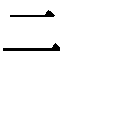
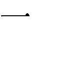
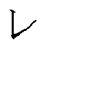

| 歎異抄 | |
| 唯円 & 親鸞 | |
| (2009) | |
歎異抄
唯円著・親鸞述
川村湊訳
Title:歎異抄
Author:唯円・著 親鸞・述
◎ご注意
本作品の全部または一部を無断で複製、転載、改竄、公衆送信すること、および有償無償にかかわらず、本データを第三者に譲渡することを禁じます。
個人利用の目的以外での複製等の違法行為、もしくは第三者へ譲渡をしますと著作権法、その他関連法によって処罰されます。
歎異抄
『歎異抄』は、浄土真宗の開祖・親鸞聖人の言葉を、弟子の唯円がその死後に、聖人の教えが歪められ、異なったものになってゆくことを憂え、歎じて、それを正すために書いたものといわれています。親鸞聖人の言葉を、耳に遺るものとして直接話法で書いた部分と、その教えと異なった〝現状〟の異論、異端の説に唯円が反駁している部分とからなっています。
親鸞聖人の教えは、法然が始めた専修念仏の浄土門の教えを、もっと庶民的に、一般人に向けて押し広げたものです。難しい仏教の経文や解釈を勉強し、困難で厳しい修行の末に、ようやく悟りを開いて、覚者、ブッダ、如来の存在する浄土へ行くことを「往生」といい、そうした境地に達することを目指して修行することを菩薩行といいます。しかし、一部のきわめて学問熱心な僧侶や、荒行にも耐えうる克己心を持った修行僧にしか、そうした往生が可能でないとしたら、一般庶民としての「凡夫（普通の人）」には、往生は絶対的に無理ということになります。
浄土門の教えは、『浄土三部経』（「無量寿経」「観無量寿経」「阿弥陀経」）に書かれている、阿弥陀如来がまだ菩薩行の修行時代に、自分自身が悟りを開いた「ブッダ」になるための願い──「本願」として、「ありとあらゆる人々（「衆生」といいます）が、本当の悟りを開いて、真実の往生を遂げるまでは、私もブッダ＝覚者＝如来になることはない」と誓った言葉に絶対的に帰依することで、学問や修行や戒律を守るといった、普通の人にとって実行するには難しい方法ではなく、易しい方法（易行）として、「南無阿弥陀仏」（当時は「ナモワアミダブチ」と発音しましたが、現在では、「ナムアミダブツ」と発音します。これが訛って「ナンマンダブ」「ナンマンダ」となりました）と、「阿弥陀如来に帰依します」ということだけを称えればよいというものです（「南無」は帰依しますという意味の称え言。サンスクリット語＝梵語に由来します）。
親鸞聖人の教えは、法然聖人の、ただひたすら「南無阿弥陀仏」と称名すればよいという浄土宗の教えからさらに先に進み、すべて自分の力で行う修行や持戒（戒律を守ること）を否定して、完全な「他力」（反対語は「自力」）、すなわち一心に「阿弥陀如来」の救いを願うことだけに専念するというもので、善行を積むとか、悪行を行わないといった一般的な道徳や倫理からも超越したものなのです。
だから、親鸞聖人は、当時の仏教僧としてはタブーであった「肉食妻帯」、すなわち動物や魚の肉を食べたり、女性と結婚したりするということを禁じた教えに反し、それらのタブーを排することを自ら実践したのでした。
親鸞聖人は、阿弥陀如来の「本願」に絶対的に帰依する「浄土真宗」の教説をまとめた『教行信証』という主著を遺しました。これはさまざまな仏教教典から博引旁証し、先人たち（曇鸞、法然など）の教説を解釈した難解な思想書ですが、同朋（信仰を同じくする者たち）の信者たちには、そうした経文のエッセンスとしての口語的な「和讃」を称えさせ、さらに弟子たちには、平易な口調で、その「悪人正機説」などの浄土真宗の根幹となる教えを説きました。それが、『歎異抄』として残ったもので、現在伝わっているもっとも古いテキストは、浄土真宗の中興の祖といわれる蓮如が書写したものです。
本書は、庶民の耳に届くように、当時の口語調で記録された『歎異抄』を、関西弁風の思いっきり砕けたスタイルで現代語訳したものです。
序
ひとに聞かせられへんアホなことばかり考えているワテ（唯円）ですけど、昔のことや今のことを思うてみるにつけても、先師・親鸞聖人のいわはったという教え（＝口伝）が真の信心と異のうてきたのを歎いとります。後で学んで後に続こうとしなはる人の疑惑があるんやないかと思えてならしまへん。うまいことに縁ある人に教えてもらわな、アンキな易しいやり方（＝易行）の仲間に入られへんのやないか。まったく自分の思い込みだけで「ひとまかせ（＝他力本願）」の宗旨を乱してはあきまへんのや。亡くなりはった親鸞聖人のいわはった御物語のおもむきを、耳の底に残ったままのもんを、ちょっとここに書いてみようと思うとります。ただただ同じ信心を行う人々の、不審な心を晴らすためのもんにほかなりまへん（ということです）。
一
アミダ（阿弥陀）はんの誓いの不思議な力に助けてもろうて、極楽往生は、こりゃあ、間違いなしと信じて、「ナンマンダブ（南無阿弥陀仏）、ナンマンダブ（南無阿弥陀仏）」と、よう、となえようと思う心が起こったときには、もうすでにお助けにあずかり、アミダはんにお引き受けいただき、（もう）捨てられまへん（＝摂取不捨）というご利益にあずかっとるんや。
アミダはんの本願（ブッダになるための願いのことや）には、年寄りやの、若いのやの、善え奴やの、悪い奴やの、一切合切の違いなど無うて、ただ信心だけが、肝心なんや。なんせ、どうしょうもなく悪い奴、罪深うてしょうむない奴らを助けてやろうちゅう願かけなんやからな。そやから、アミダはんを信じとれば、ほかに善えことを無理にしょうなんてことも要らへんのや。
「ナンマンダブ」の念仏にまさる善えことなんぞ、ほかにあらへんのや。悪いことかて、恐るるに足らずや。アミダはんの本願を邪魔する以上の悪なんか、ほかにあるはずもないんやから（といわはりました）。
二
おうおう、みなさんは、常陸の国から十いくつもの国の境目を越えて、こんな遠くによう来なはったのう。身のわずらいや命のさわりも、ものともせんで、この愚禿親鸞のところへ来なはったのは、ただただ、一途に極楽往生の道を聞こうと思うてのことやろなあ。そやけどなあ、ワテが、「ナンマンダブ」の念仏の道以外に、往生（永遠に極楽にいることや）はどないしてやるんか、あるいは、ありがたいお経の文句や秘密の教えなんかも知っとるんやないかと、そないに思うていやはるんやったら、そりゃあ、ごっつう間違うとるといわずにはおられまへん。
もし、そないやったら、いわゆる南都北嶺の、興福寺や東大寺、延暦寺や三井寺には、物知りのエライさんの坊主たちが、おおぜいいてはるから、聞いてみなはれ。そんな人々にも会うて、往生の肝心カナメのところを、ようく聞きなはれ。
この親鸞には、ただ「ナンマンダブ」と念仏して、アミダはんに救うてもらいなはれちゅう、法然聖人はんの教えてくれはったことを信じとるだけで、別に、ほかにはなあんにも仔細な理由はあらしまへん。「ナンマンダブ」ちゅう念仏は、まっこと、浄土に生まれ変わるタネになるのやら、また地獄に堕ちる業（前世や現世の行いのことや）となるんか、どっちがどっちやら、ようわかりまへんのや。
たとい、法然聖人にだまされ、すかされて、念仏したおかげで地獄に堕ちたとしても、後悔するつもりはあらへんのや。なんでやいうたら、「自分たのみ（＝自力本願）」でいっしょうけんめいに修行して、そいでホトケはんになれるいう身の上やったら、「ナンマンダブ」と念仏することで地獄に堕ちたいうなら、だまされた、すかされたちゅう後悔もするんやろうけど、どないなことをやっても、ダメちゅう身のほどなんやから、まあ、地獄の一丁目住まいは決まったも同然のもんや。
アミダはんのどんなしょうむない奴でも救うてやろういう本願がホンマやったら、おシャカさまのいわはったこともウソやあらへんやろし、おシャカさまがいわはったことを書いとるお経がホンマやったら、善導（＝中国の浄土門の偉い坊さん）はんのいわはったことはウソやデタラメじゃあらへんやろし、善導はんがホントのこといわはったんなら、法然はんのいわはったこともホラではあらへんはずや。法然はんがいわはったんがホンマやったら、この親鸞がいうたことも、まったくのウソやホラではないはずや。まあ、結局のところ、ワテの信心ちゅうのは、こんなものや。これ以上いうても詮ないことやで、念仏を信じて「ナンマンダブ」をとなえるんか、またはやめてしまわはるのか、それもこれも、みいんな、あんたがたの心次第や（といわはりました）。
三
善え奴が往生するんやさかい、ましてや悪い奴がそうならんはずがない。世間のしょうむない奴らは、悪い奴が往生するんなら、なんで善え奴がそないならんことあるかいなというとるけど、なんや理屈に合うとるようやけど、それは「ひとまかせ（＝他力本願）」ちゅうモットーにはずれとるんや。
つまり、何でも自分の力でやろう思うとる奴は、「お願いします」ちゅう気持ちの欠けてる分だけ、アミダはんのいわはる誓いと違うとる。けども「自分たのみ（＝自力本願）」という心を入れ替えて、まあ「あんじょう頼んます」と願うとれば、ホンマもんの極楽行きも間違いなしやで。
アホで悩みっぱなしのワテらは、いくら何をやったところで、悟りなんかひらけるもんかいな。それを見越してアミダはんが、可哀想なやっちゃ、こらあ、いっちょう救ったろかいなと、願かけしてくれはったんや。悪い奴を往生させたるというのやから、「ひとまかせ」で「お願いしますわ」と一途に思うとる悪人が、いちばんに往生してしまうんは、理屈に合うとるわけやな。
そやから、善え奴でさえ往生する、ましてや悪人が往生するいうのは当たり前のことやないかいな、と（法然はんは）いわはりましたんや。
四
人に慈悲をかけるちゅうことには、自分で悟りをひらいてホトケはんになるのんと（聖道の慈悲というのや）、あんじょう浄土に迎えてもらうのんと（こっちは浄土の慈悲や）、ふたつの違いがあって、その入れ替わる変わりめちゅうもんがあるんや。聖道（自力でホトケはんになる道や）の慈悲ちゅうのは、いろんなものを憐れんだり、可哀想に思うたりして、面倒を見てやることや。そいでも、思うように世話して、助けてやるちゅうことは、難儀なもんや。
そやから、さっさと浄土へ行って、そこでホトケはんになって、可愛いとか可哀想とかの気持ちで、思うたとおりにみんなにご利益を与えて、助けてやるんが、浄土の慈悲ちゅうもんや。
この世の中で、どんなに可哀想やなあ、不憫やなあ思うても、みんな承知しとるように、人を助けるいうのはホンマに、えろう難儀なこっちゃ。だから、こないに可愛い、可哀想や思うても、そないな思いはなかなか首尾一貫せえへんもんや。そやから、「ナンマンダブ」と念仏することだけが、終いまできちんと面倒みたるという大慈悲心といえるのではあらへんか（といわはりました）。
五
親鸞は、自分のオカン（母）やオトン（父）の供養のためには、いっぺんも「ナンマンダブ」と念仏をとなえたことはあらしまへん。なぜかちゅうと、一切の心あるもんは、これはこの世・あの世のオカンでありオトンであり、人間みんな兄弟やからや。みんながみんな、この世か来世か、あるいは再来世か、またまた再々来世にホトケになってから救わなあかんもんやからや。
自分の力で「ナンマンダブ」いうて、オカンやオトンを救えるんやったらともかく、自分の力いうのを捨てて、いそいで浄土に生まれ変わって悟りをひらいたら、地獄、餓鬼、畜生、修羅、人間、天上の「六道」を輪廻したり、胎生（＝けものの類）、卵生（＝鳥、魚の類）、湿生（＝カエルやヘビなどの類）、化生（＝化け物の類）の「四生」を繰り返して業苦の世界に沈んだとしても、自由自在の神通力で、まず人様を救済することを考えるべきや（といわはりました）。
六
念仏専門の人らが、ワテの弟子や、ヒトの弟子や、という口ゲンカをするほどみっともないものはあらへん。親鸞は、弟子は一人ももってはおらへん。なぜかちゅうと、自分の意志やはからいでひとに念仏させたんなら、ワテの弟子やいうことにもなろうが、ひとえにアミダはんのおぼしめしで念仏するようになったんやから、ワテの弟子やいうのんは、まったくもってオコガマシイこっちゃ。くっつくべき縁があったからくっつき、はなれるべき縁があったからこそ、はなれるちゅうのが当然のことで、師にたてついて、ほかんひとのところへいって念仏するんなら往生できへんぞ、なんぞいうのは、アホらしい話や。
アミダ如来はんにいただいた信心を、おれのもんやいう顔をして取り返そうなんていうのんは、ホンマにとんでもないことやで。自然の理屈いうもんがあって、それにかなえば、ホトケはんの恩も知り、また師の恩ちゅうものもわかるようになるんや（といわはりました）。
七
念仏する者は、邪魔もんなしの一本道や。なんでやねんと問うなら、天の神さんも、地の神さんも、信心を行う者を、敬うてくれはるから。魔界の悪魔や鬼も、人をたぶらかす外道（人の道にはずれた教えや）の連中も、邪魔することはできへんからなんや。罪作りしたかて、その業の報いを感じることがないし、念仏以上に善ちゅうもんなんか、あらへんのやからや（といわはりました）。
八
念仏は、それを行う者にとっては、「何にもやっとらん（＝非行）」であり、「善えことは何もない（＝非善）」や。自分で意識的にやっとることやないのやから「何もやっとらん」ちゅうことやし、自分で意識的に「善えこと」しようちゅうわけではないんやから、「善えことなし」や。ただただ「ひとまかせ（＝他力）」で、「自分たのみ（＝自力）」ちゅうことから離れているさかい、「ナンマンダブ」というのは、「何にもやっとらん（＝非行）」「善えことは何もない（＝非善）」というのや（といわはりました）。
九
「ナンマンダブ」と念仏をとなえても、躍り上がって喜んだりするような気持ちが、ちぃとも湧いてけえへんで、また、はよう浄土に行きたいいう心が湧いてけえへんのは、どないなわけかいなと、そんなふうに思うとるんですと、ワテ（唯円）がおそるおそる聞いてみたら、「いやあ、この親鸞にもそないな不審があるんやけど、唯円房も同じ心やったのか」と、いわはりました（以下、親鸞はんのお言葉や）。
よくよく考えてみれば、天に躍り、地に踊るほどに喜ばしいことを、あんまり喜べんちゅうのは、いよいよ往生は決まったもんやと思うべきことや。喜ぶべき心をおさえて喜ばんのは、悩みや煩いのもとの煩悩ちゅうもののせいで、そやからこそホトケはんは、前からそのことをご存じやから、自分は「煩悩具足の凡夫」、すなわち、あれもこれも悩みっぱなしの俗物や、といわはりましたのや。
「ホトケはんまかせ（＝他力本願）」は、こないなワテらのためにあるもんやと知れば、ますます頼もしく思えるやないか。また、急いで浄土に行きたいちゅう心がなく、ちょっと疲れたり、わずろうたりすると、「ああ、もうアカン」とか「死ぬ死ぬ」なぞと心細うなったりするのも、煩悩のせいちゅうこっちゃ。
ずっと昔からいままで生まれ変わり死に変わりしてきた、住み慣れたシャバ（娑婆＝この世）ちゅうもんは、やっぱり容易に捨てがたいもんで、これまで生まれた経験のないとこを、安楽の浄土やていうたところで、急に恋しくなるもんでもおまへん。まったくワテらはよくよく煩悩のかたまりちゅうやつやな。どんなになごりおしくとも、シャバの縁が切れ、命の力がつきたときが、まさにオダブツで、浄土行きになるはずや。ホトケはんは、いそいでオダブツしたくないちゅう奴を、ことに可哀想に思うてくださるのや。
それにつけても、ホトケはんの「大悲大願」はたのもしいもんやないか。往生はもう決定的や。躍り上がるほどの気持ちがあり、急いで浄土へも行きたがるっちゅうのは、煩悩がないちゅうことで、それはそれで異常で、ふつごうなものやないか（といわはりました）。
十
そもそも親鸞聖人が関東や北陸の田舎におらはったとき、同じこころざしを持っていはった人らが田舎から京都へおのぼりさんして、信心をひとつにして、未来の極楽往生を願うとりました。同輩たちは、同じ時に（親鸞聖人の）教えの趣旨を承ったちゅうのに、それらの人々に伴うて「ナンマンダブ」いわはる若いもんや年寄りなど、そらあおおぜいいてはるなかに、親鸞聖人のいわはったこととは「違うた考え（＝異義）」をいわはる人も近頃はようけおるんやということを、つたえきいておます。しょうむないことやけど、ワテ、唯円がそれを詳しゅう語ろうと思うとるんや。
十一
目に一丁字もない無学なもんが「ナンマンダブ、ナンマンダブ」いうのに会うて、「お前は（アミダはんの）誓願のフシギな力を信じて念仏しとるんか、また名号（「ナンマンダブ」の言葉のことや）のフシギな力を信じとるんか」と、びっくりさせるようなことをいうて、この二つのフシギな力の違いについては何にもはっきりさせんと、人の心をまどわすようなことをいうのは、このワテ（唯円）のことばを聞いて、よくよく考えを深めて、すっぱりと止めるこっちゃ。
誓願のフシギさによって、なるべく簡単で、となえやすい名号を考え出して、この「ナンマンダブ」ちゅう名字（＝仏の名号）をとなえるもんをば（極楽へ）迎えてやろうちゅうアミダはんの御約束があるさかいに、まず、アミダはんの大きなお慈悲の大願のありがたさにお助けいただいて、ようやく生きることや死ぬことから抜け出せるもんと信じることや。「ナンマンダブ」と申すのも、アミダ如来はんのおはからいと思うて、ちっとも自分の力なんか混じらんからこそ、アミダはんの本願に応じて、ほんまもんの浄土に往生することができるんや。これは誓願のフシギな力を信じることで、名号のフシギさ・ありがたさもいっしょにそなわるんや。誓願・名号のフシギさがいっしょになって、それで別に違うたもんではないんや（同んなじもんや）。
つぎに、自分の知恵みたいなもんをさしはさんで、善えことと悪いこととのふたつを分けて考え、往生の助けになったり、さまたげとなったりするような、二つのことがあるちゅうように思うのは、誓願のフシギさを信用せんと、自分の心ひとつで往生の修行にはげんでみるちゅうことで、となえとる「ナンマンダブ」は、「自分たのみ」というこっちゃ。
こんな奴は、名号のありがたさやフシギさを、やっぱり信ぜん奴やなあ。信ぜんでも、なまけもんやうたぐり深い奴、ええ衆のぼんぼんの行かはるような辺地（浄土の片隅のことや）ぐらいには往生するんは、アミダはんの、こんな奴らでも浄土に行かしてやってくださいちゅう「約束はたし（＝果遂）の願」ちゅうもんがあるおかげで、これも名号のフシギなありがたさや。これもまた誓願のフシギさと同じもんなので、結局はひとつのものなんや。
十二
お経を読んだり、その解説書を読んで学問したりせんひとらは、あんじょう往生でけるかどうかわからへんという奴がおるんやけど、これはえろういいそこないちゅうこっちゃ。「ひとまかせ」ちゅうほんまもんの教えを説明するいろんな聖なる教えは、本願を信じて、「ナンマンダブ」いうたらホトケはんになれる、それ以外のどんな学問も往生の要であるわけなんかないやろ、ということや。ほんまにこんな理屈に迷うてはるような人は、ようけ学問して本願の主旨ちゅうもんを知ればええんや。お経を読んでも、学問をしても、聖なる教えのほんまの意味ちゅうもんをこころえられんいうことは、はあ、まったく気の毒なもんや。
目に一丁字もない無学なもんで、お経のことも学問の筋道ちゅうもんも知らんものが、となえやすかろう思うて、「ナンマンダブ」ちゅう名号がおわしますんやさかい、これを「易行」、アンキで簡単なやり方というんや。学問で何とかしたるちゅうのは、聖道門いうて、これは難行、ごっつう難しいやり方というんや。「間違うて学問して、名誉やの利欲なんぞにしがみついとるひとは、今度生まれ変わったつぎの世での往生はどないなるかわからへん」という証文（＝証拠の経文）さえあるちゅうことや。
最近は、ひたすら「ナンマンダブ」をとなえる専修念仏のグループと、学問をする聖道門のグループとがおって、言い争い（＝法論）をくわだてたことがあったのやけど、「ワテらのやり方のほうがすぐれとる、お前らのんは劣っとる」なんぞといわはるから、法敵も出てくるし、教えを謗るやつも出てくるんや。これは、本当は、自分で自分たちの教えの首を絞めとるようなもんやおまへんか。
たとえ、いろんなグループが「ナンマンダブばかりいいよることはどうしょうもない奴らのためのもんで、そいつらの教えはあさましいもんや」いうても、別にあらそうこともなく、ワテらみたいなもともとゲスな凡夫で、目に一丁字もない無学なもんが、信じればお助け下さるいうから、「ああ、ありがたいこっちゃ」と受け入れたちゅうことで、これはええとこの生まれのひとにはいやしいもんでも、ワテらのためにはありがたい最高の教えなんや。
たとえ、いろんな意味でありがたい教えがいろいろあっても、ワテらにとってとても歯がたたんもんやったら、とうてい受け入れられまへん。ワテもあんたも生死の執着から離れるちゅうことが、いろんなホトケはんの御本意なんやから、ひたすら念仏するのに何のさまたげがあるかいな。憎たらしいちゅう気持ちがあれへんかったら、ひとに仇するちゅうことがおますかいな。それに、「口争いなんてするところには、もろもろの煩悩が起こるんや。賢いもんはなるべく遠離るんがええ」いうた昔のひとの証文だってあるんやさかい。
故聖人・親鸞はんは、「この法をば信じるもんもおれば、謗るもんもおるやろな、ちゅうことをホトケはんがいわはったのやから、ワテはすでに信じとります。また、謗るひとがいるからこそ、ホトケはんのいわはったことが、本当のことやったと知ることができるんや。そうであれば、往生することはいよいよ一本道や思うて間違いあらへん。間違うて謗るひとがおらへんことは、どんなに信じるひとがいても、おかしいと思わずにおられまへん。こないなふうにいうたかて、必ずひとに謗られんとアカンいうんやありまへん。前もって信じるもんや謗るもんもいるちゅうホトケはんの主旨をご存じで、『ひとが疑うことのないように』と説かれはったことをいうとるんや」ということをいうてはりましたのや。
今の世には、学問をして、ひとが謗るのを止めさせ、もっぱら議論したり問答したりするように坊さんたちが心がけとられるようなんやけど、いよいよアミダ如来はんの御本意を知り、悲願の広く大きな主旨を承知して、「いやしい身分のワテらに往生なんか無理や」なんぞと危ぶんでいるようなひとに、本願ちゅうもんは、善えとか悪いとか、綺麗やとか汚なくあさましいとかいうことは無いんやいう主旨を、よう説明して理解させるちゅうことが、学問するインテリさんの本分ということやないか。
たまたまほかのことを何も考えんと、本願に相応するようにとひたすら「ナンマンダブ」と念仏するひとに、「学問せんことにはあかん」なぞと脅すようなことをいうのは、法の悪魔みたいな妨げなんや。ホトケの仇や。自分だけが「ひとまかせ」ちゅう信心がないちゅうことだけやなく、誤って他人さんの心も惑わすちゅうことや。せいぜい慎むこっちゃ。先師の御心に背くことなんやから。そして情けのう思うこっちゃ。アミダはんの本願に叶わんことやからな。
十三
アミダはんの本願をフシギな有り難い教えや思うて悪事を恐れんちゅうのは、それを「本願誇り（本願のあるのをええことに、慢心することや）」というて、往生が叶えられへんことやといいはるのは、こらあ、本願を疑うちゅうことで、善悪というもんの宿業（過去の世からの報いのことや）いうことをこころえておらんからなんや。
善えことしよう思うのも、宿業のもよおすためやし、悪いことをついつい考えてみたりするのも、悪の宿業がそうさせるちゅうことや。亡くなった聖人はんがいわはったのは、「兎の毛や羊の毛の先のほんまに細かなちりほどの罪かて、宿業にあらずちゅうことはないと知るべきや」ということやった。
また、ある時は、「唯円房は、ワシがいうことを信じるんか」と、聞かはりましたので、「もちろんですわ」というたら、「そんならワシのいうことに絶対そむかへんか」と、重ねていわはりますから、「もちろん、つつしんで承知させてもらいますわ」というた。「ほな、たとえばひとを千人殺せいうて、そしたら往生間違いなしやいうたらどうする」と聞かはりました。「いやあ、いわはることやけど、一人かてワイの器量では殺すなんてことはできしまへん」と申しましたら、「ほんなら、さっきはなんで親鸞のいうことにそむきまへんいうたんや」ときついことばや。
これでわかるやろ。なにごとでも人や自分の心のままになるんやったら、往生のために千人殺せといわれたら、殺さんとあかん。そやけど、そんな業縁はないので、一人かて害することはできしまへん。自分の心が善うて殺さんちゅうことではないということや。
また「害せえへんと思うても、百人千人を殺すことかてあるんや」といわはった。おっしゃったのは、ワイらの自分の心で、善いことは善い、悪いことは悪いと思うことやなしに、願のフシギさに助けられておることを、知らずにいるちゅうことの教えなんやなあ。
ちょっと前に、間違うた考え（＝邪見）に陥ったひとがいて、「悪をつくったやつを助けなあかんいう願がおありやさかい、わざと好んで悪いことをして、往生の業としよう」ちゅうことをいうたが、だんだん、それはケッタイな話やいうて評判になったとき、（親鸞はんが）お手紙のなかで、「薬があるというたからとて、毒を好むちゅうのはおかしなことや」とはっきりいわはったのは、そないなよこしまな考え（＝邪執）をやめさせようとしはったためや。まったく、悪ちゅうもんは、往生の妨げになるもんではないのや。
「戒律を守るちゅうことだけで本願を信じてると思うとるようでは、ワテらはなんで生死の境を離れることができるかいな」ともいわはった。こないなあさましい身でも、本願におあいしたからこそ、ほんまに誇れるちゅうもんや。そないいうても、もともと身につかん悪業なんどは絶対に作れまへんのや。
また、「海や川で網を引っ張ったり、釣りをして魚を獲るもんも、野や山に猪や鹿なんぞを狩ったり、鳥を獲ったりして口を糊しているもんたちも、商売をしたり、田畑を作って暮らしたりしているもんも、ただみんな同んなじことや」と。「そないな業縁がもよおすならば、どんなことでもやってしまうもんや」と、聖人はんはいわはったんで、このごろは「かっこよく後生を頼もうとするもんだけが、ナンマンダブと念仏するようにせんといかん」とか、あるいは念仏道場の前に張り紙して、「かくかくしかじかのことをしたもんは、道場へ入るべからず」なんぞというのは、ひとえに賢く、善人ぶって精進してまっせ、というポーズを示しとるだけで、その中味は噓っぱちで、スカスカや。
願を当てにして作ってしまう罪も、宿業のもよおすためや。そやから、善えことも悪いことも、みんな業報ちゅうことにまかせて、ただひたすら本願におすがりすることこそ「ひとまかせ」というもんなんや。『唯信抄』ちゅう本にも「アミダはんにどんだけの力があるか、ほんまに知っていて、罪業の身やから救われまへんと思うとるんか」とありますのや。
本願を誇る心があるからこそ、「ひとまかせ」の信心もしっかりと固まるというものやおまへんか。およそ悪業・煩悩をぜえんぶ断ち切って本願を信じるちゅうことであれば、本願を誇るちゅうことがなくてもええかもしらんが、煩悩を断ち切ればすなわちホトケはんとなり、ホトケはんになれるんなら五劫思惟（アミダはんの練りに練った考えのことや）ちゅう願そのものがムダなもんになってしまうのやあらへんか。
本願誇りを戒めるひとびとも、煩悩や不浄なもんがいっぱいあって足りんどころのハナシやあらへん。それは逆に願を誇っとるちゅうこととちゃうか。どないな悪を本願誇りいうて、どないなもんが悪を誇らんちゅうことなんか、そないな人たちはその区別をどうつけはるのやろうか。そんなんは、かえって幼稚な考えいうことやおまへんか。
十四
一ぺんだけ「ナンマンダブ」と念仏すれば、八十億光年ちゅうとてつもない長い時間に重ねた罪をいっぺんに無くすることができるということを信じるちゅうこと、これは「十悪（殺生・偸盗・邪淫・妄語・両舌・悪口・綺語・貪欲・瞋恚・愚痴）・五逆（父殺し・母殺し・坊さん殺し・寺壊し・仏に危害を加える）の罪人が、日ごろは念仏せんで、命が終わろうとするときに、はじめて善え指導を受けて、一ぺんだけでもナンマンダブと念仏すれば、八十億光年の間の罪が無うなり、十ぺんも念仏申せばその十倍の時間に重ねた罪を無くして、往生でける」といわれておる。これは十悪・五逆の罪の重たいことを教えるためのもんであって、一ぺんとか十ぺんとかいわはったのは、罪を無くするということのコトバのアヤみたいなもんであって、ワテら一向専修（浄土門）のほんまの教えにはまだ届いていないというべきや。
その理由は、アミダはんの光明に照らされておるからこそ、一ぺんでも念仏しよういう気持ちが湧いたときに、ダイヤモンドみたいに堅い信心をいただくからや。そのときすでに絶対に悟りをひらけるちゅう境地に達しとるわけで、ましてや、命が終わればもろもろの煩悩や悪い妨げなんぞを転じて、もう怖いもんも疑いもないという悟りの境地に入ったということや。こないなアミダはんの悲願があるからこそ、こんなあさましい罪人がどないしたら生死の苦しみから脱け出すこと（＝解脱）ができるんやろと思うて、一生の間「ナンマンダブ、ナンマンダブ」と申す念仏は、ぜえんぶ如来はんの大悲への恩返しやで、その徳を有り難い、有り難いと感謝することや。
「ナンマンダブ」と念仏をとなえるたんびに、罪を滅ぼしていると信じることは、すでに自分自身で罪を消滅させて往生しようと励むということや。もし、そないなら、一生の間、思いに思うことがみんな生死の苦しみにつながるもんやさかい、命が尽きるまでずうっと「ナンマンダブ、ナンマンダブ」と念仏し続けんと往生でけんということになるやろ。
けど、業報ちゅうもんがあるさかい、どないなおかしなことが起きたり、また病気や苦痛に責められて「ナンマンダブ」という念仏をとなえるのも難しい状況になったりもするやろ。その間の罪はどないして消せるもんかいな。罪が消えなければ、往生はでけへんということかいな。
「（アミダはんが掌に）つかまえとって（決してワテら凡夫を）捨てへん（＝摂取不捨）」ちゅう願があるけど、これはアミダはんが、ワテらみんなを救いあげてくれて、一人も捨てへんちゅうことなんや。どないなことがあって罪業を犯しても、「ナンマンダブ」と念仏できんままにオダブツになっても、すみやかに往生を果たさせてやるちゅうことや。またおのずから念仏してしまうのも、ただ今、悟りをひらこうとする時期が近づくにつれて、いよいよアミダはんをお頼みして、ご恩返しをせなあかん、思うようになるちゅうことなんや。
罪を滅ぼしたいと思うのは、「自分たのみ（＝自力本願）」という心で、臨終の際に正しく念仏しなくちゃならんいう意志があるちゅうことで、それは「ひとまかせ（＝他力本願）」という信心が無いということなんや。
十五
煩悩をいっぱい持ったまま、そのまんまですでに悟りをひらいとるちゅう教えのことやけど、これは、もってのほかの、とんでもないこっちゃ。
即身成仏（生きたまんまのそのままの身でホトケになることや）ちゅうのは、真言密教（高野山のことや）の教えで、三密行業（身で印を結び、ダラニをとなえ、ホトケはんを念ずる修行のことや）という修行の成果や。六根清浄（眼、耳、鼻、舌、身＝体、意＝心の、六つの感覚器官をキレイにし、見たいとか食べたいとか聞きたいとか、そないな欲望の汚れを洗い落とす修行のことや）ちゅうのは法華経がいわはることで、四安楽（体とコトバと意志において過ちをおかさず、悟りをひらくことをこころがけることや）の修行をすることの功徳というこっちゃ。これはみいんな厳しい、キツい修行をして、それに耐えられる人のおつとめであって、よくよく心を落ち着け、ホトケはんや浄土のことをイメージ・トレーニングして悟りをひらくということや。
つぎの生で悟りをひらくちゅうのが、アミダはんまかせの浄土門の根本的な主旨で、信心が固まったときに、必ずそうなるもんや。これは、アンキな易しい方法であり、ダメなワテらのようなもんのできるつとめであり、善え奴も悪い奴も、捨てられまへんという法なんや。
だいたいにして、今の生で煩悩とか悪い障りなんぞを断ち切るなんちゅうことは、きわめて有難い（有ることが難しい）もんや。真言や法花（華）の修行をしてはるエラいお坊さんたちでさえ、そないな煩悩を持ったまんまホトケはんになるのやから、なおもって、次の生での悟りを祈るようなワテらが簡単に煩悩を断てまっかいな。
戒（戒律を守ることや）とか行（修行）とか恵解（頭で理解することや）とか、そんなもんと無縁のもんが、アミダはんのありがたい本願の船に乗せてもろうて、生死の苦海を渡り、浄土の陸地に着かせてもらうならば、煩悩の真っ黒い雲はたちまちに晴れ、真実の姿の明るい悟りのお月さんがすみやかに顔を出し、十方の妨げのない光明は、あたり一面に照り輝くのや。一切の衆生をお救いくださるときこそ、本当の悟りというもんや。
この身のまんまに悟りをひらくとかなんたらいわはる人は、おシャカはんみたいにさまざまにヘンシンして、三十二相（三十二種類の姿）とか八十随形好（八十種類の見目のよい姿）ちゅうのもそなえて、説法したりして、みんなをお救いくださるというんのやろか。こんなのが、今の生で悟りをひらくちゅうことの見本なんや。
和讃に、こういうのがあるんや。「堅い堅い信心がちゃんと定まったときに、アミダはんから出てくる光に包まれて、永久に生死を離れることがでける」。これは、信心が固まったときに、いったんお救いしていただいたら、簡単にはお捨てにならへんから、六道（天上・人間・畜生・修羅・餓鬼・地獄）に輪廻するちゅうなんてことからおさらばや。そないなれば、永久に死んだり生きたりすることを免れるんや。こないなことを知るちゅうことを、悟りをひらくちゅうことにはぐらかしていうてええのやろか、ほんまにあわれなことや。
「浄土真宗は、今の世で本願を信じて、あの世で悟りをひらくと教えてもろうたんや」
と、亡くなりはった聖人はんもいわはりましたのや。
十六
信心の行者は、おのずから腹を立てたり、口汚く罵ったり、ともだち（＝同朋）やみちづれ（＝同侶）に会って口ゲンカしたりしても、必ず「悔い改め（＝廻心）」をするちゅうこと。これは悪を断じて、善を修めるちゅうことや。
ひたすら念仏する一向専修の人は、「悔い改め」ちゅうことはたったいっぺんだけあるもんや。日ごろ、「ひとまかせ（＝他力本願）」というほんまの教えを知らへん人が、アミダはんの知恵を分けてもろうて、もとの心ととっ替えて、本願にすがってお救いを願うことこそ、「悔い改め」いうものなんや。いちいちのことにつけて朝に一ぺん、夜に一ぺんずつ「悔い改め」なんぞすれば往生するなんていうても、人間の命ちゅうものなんぞ、吐く息を吸うまでの一瞬の間も待たんでお終いになるもんや。そやから「悔い改め」もせんで、いつもニコニコして我慢強い（＝柔和忍辱）という境地に至らへん前に命が尽きてしもうたら、「つかまえとって決して捨てへん（＝摂取不捨）」ちゅうアミダはんの本願はむなしゅうなるちゅうことやおまへんか。
口先では「願力におすがりしてます」いうても、心のなかでは「そんなに悪いやつを助けたるという願はフシギでありがたいことやけど、そないいうてもやっぱし、善え奴をきっとお助けになるんやないか」と思うて、願力を疑うて、「ひとまかせ（＝他力本願）」にお頼みする心を欠いて、片隅の浄土（＝辺地の浄土）にしか生まれへんことは、もっとも嘆かわしくお思いになるはずのことや。
信心さえしっかり定まれば、往生はアミダはんにすっかりお願いし、お頼みすることやから、自分がどうのこうの考えて、どうにもなるもんやおまへんのや。悪いことがあったとしても、ますますアミダはんの願力におすがりしてお頼みすれば、自然のことわりで温和で我慢強い心も出てくるちゅうもんや。
すべてのいろんなことにつけても、往生には賢しらな考えなど持たずに、ただほれぼれと、アミダはんのご恩がますます深いことをつねに思い出してみるべきや。そうすれば、自然と念仏も口から出てくるのと違いまっか。これが自然の道理や。
自分であれこれ考えないことを、自然ちゅうのや。これはすなわち「ひとまかせ（＝他力本願）」ということや。それなのに、自然ちゅうことが別にあるように、知ったかぶりをしてものをいう人がおられると聞いとりますが、ほんまにあさましいことやで。
十七
片隅の浄土に往生するという人は、ついには地獄に堕ちるに違いないいうこと。このことは、どういう証拠の経文に見えることなんやろか。
学問をもっぱらにするインテリさんのなかで言い出されたことであり、あさましい教えいうことや。いろんな経論とか解説や注釈をどないに考えてはるんやろか。
「信心の欠けた行者は、本願を疑うことによって、片隅の浄土にしか行けないが、疑ぐりの罪を償うてのちには、ほんまもんの浄土に行かはる悟りをひらく」いうことをワテは親鸞はんから聞いておりますのや。信心の行者ちゅうもんは少ないゆえに、仮の浄土に（まず）多く薦めて入らされるちゅうことであって、「ついにムダになってしまう」なんぞとインテリさんみたいにいうのは、如来はんが噓いつわりをいわはったことにしてしまうんやおまへんか。
十八
ホトケはんやお寺さんへのおフセが多い少ないで、大きなホトケや小っさいホトケになるんやいうのは、こりゃあ、ケッタイな説や。誰かがオモロイことでもいおう思うていい出したことやろ。まず、ホトケはんに大きいの小っさいのなんぞ、そないなことあらへんのや。
まず、ホトケはんに大きいだの、小さいだのと分量を決めようちゅうことが、あってはならんこっちゃないか。安養浄土の教主はん（アミダはんのことや）がホトケはんのお体のことを申すのも、それはわかりやすい方便の見かけちゅうもんや。ほんまの本性という悟りをひらいて、長いの短いの、丸いの四角いのいう形や、青いの・黄色いの・赤いの・白いの・黒いのいう色なんかも無うなれば、なにによって、大きいの小さいのちゅうことを決めるんかいな。念仏をとなえるときに、ホトケはんの仮の姿をイメージするちゅうことはあっても、大きな声の念仏には大きなホトケはんを見て、小さな声の念仏には、小さいホトケを見るちゅうんかいな。もしかして、こんな屁理屈なんぞに、かこつけておるちゅうことかいな。
あるいはまた、大旦那としてぎょうさんおフセを出すことかいな。いかにどれほど宝もんを仏前に投げ出そうとも、お師匠はんにほどこそうとも、信心が欠けておればまったくムダなこっちゃ。一枚の紙も、半文の銭も仏法のカタに入れなくとも、「ひとまかせ（＝他力本願）」の心を賽銭として投げ入れて、信心さえ深ければ、それが願の本意ちゅうものなんや。
すべて仏法にかこつけて、世間的な欲心があるために、お仲間を脅して、利益を巻き上げようちゅう魂胆なんや。
後記
これまでのことは、みんな信心が異のうていることから起こってきたものや。
故聖人（親鸞）はんがいわはったことやけど、法然聖人はんがまだいてはるとき、お弟子はんたちが、ぎょうさんな数いてはるなかに、同じ御信心の人も少のうていはったからやろか。親鸞はんの御同朋のなかで論争があったいうことや。その原因は「善信（親鸞）はんの信心も、聖人（法然）はんの信心もひとつや」といわはりましたら、誓観房とか念仏房などといわはる御同朋たちが「もってのほかや」いうて口争いになったちゅうことや。「なんでやねん、聖人はんと善信房の信心がひとつのはずはないやろ」といわはるので、「聖人はんの御知恵や才覚は、それは広くていてはるさかい、ひとつや、いうたら間違いやけど、往生の信心ちゅうことに関してなら、まったく異なることなしや。同じひとつや」と、ご返答しなはったのやけど、なお「なんで、そないなことになるのんや」と疑問や難詰があったんや。
結局、聖人はんの前でどっちが正しいのか決着をつけようちゅうことになったんや。この仔細を申し上げたら、法然聖人はんがいわはるには「源空（法然）の信心も、如来はんからいただいた信心や。善信房の信心も如来はんからいただかはった信心やさかい、ただひとつのもんや。別の信心ちゅうことをいわはる人は、源空が参るはずの浄土には、絶対に来やはらへんやろな」といわはった。今頃の、一向専修の人々のなかにも、親鸞はんの御信心と自分の信心が同じひとつのものやないと思うとる人もおる。いずれもいずれも、くだくだしい繰り言やけれど、書き付けておくのや。
ぽつんと露の一滴がほんのちょびっと枯草みたいな身にかかっておるような命やからこそ、いっしょにこれまでやってきてはる人々に、おかしなことやと不信を持たれることもあるので、聖人（親鸞）はんのいわはったことのおもむきをも、こないに書いてみたのや。ワテが両眼をつぶってしもうた後は、こないにわやくちゃなこともぎょうさん出てくるんやないかと思うと、嘆かわしいことや。
こんなようなことを、口々にいいあってはる人々は、言い迷わせられることのある場合は、故聖人の御心に叶うておる御聖教などを、よくよく読んでみはることや。およそ、聖教には、ほんまのことと仮のこととがあい混じり合うておる。見かけだけのもんを捨てて、マコトのもんを取り、仮のもんを捨ててホンマのもんをもちいることこそ、聖人の御本意というもんや。念には念を入れて、ぜひとも注意して、聖教をごちゃごちゃに乱さんことが肝心なんや。
大切な証文を少々抜き書きしたようなもんやけど、これを目安にして、こんなもんでも参考にしてもらいたいと思うております。
親鸞聖人はんがいっつもいうていやはったのは、アミダはんの長い間考えに考えはった願ちゅうものをよくよく考えてみれば、「こりゃあホンマにこの愚禿親鸞ひとりのための願いいうてもええほどや。そやから、ぎょうさんの業を抱えとる身であるのに、それを助けようと思うてくれはる本願がどないにありがたく、かたじけないこっちゃないか」と、しみじみと御述懐されはったのや。
あらためて今また考えてみれば、善導はん（＝中国の偉いお坊さん）の、自分らはこれまさに罪悪まみれ、生き死にに、じたばたしとる俗人で、はるか昔から今までつねに沈みつねに流されっぱなしで、迷いから離れるなんてことに縁のない身のほどやいうことを知れちゅう金言に、まったく異なるところのない身なんや。
そやから、アミダはんはわが身に引きつけて、ワテらが身の程の罪悪の深さも知らず、如来はんの御恩の高いことを知らへんで迷うておるのを、思い知らせてやろうとなさったんや。
まことにアミダ如来はんの御恩ちゅうものを考えることなく、ワテもあいつも善え奴とか悪い奴とか、そんなことばかりいうておるんや。聖人はんのいわはったことには「善悪のふたつとも、どっちもどっちも知らへん」ということや。そのわけは、如来はんのお心に良しと考えていやはることを全部知っておるというのなら、良えことを知っとるというてもええし、如来はんが悪いと考えはっとることを知っとるというなら、悪いちゅうことも知っとるということになるのやけど、悩みっぱなしのワテらのような俗人にとって、火事場でウロウロしとるようなはかないこの世で、いろんなことは、全部むなしいそらごとやたわごとで、真実のものなんかありゃせんのや。ただ「ナンマンダブ」ちゅう念仏だけがホンマもんやといわはりましたのや。
まことにワテもひともそらごとばっかりいい合うているようななかで、それにしてもひとつ心の痛むことがあるのは、念仏をとなえることについても、信心がどうやこうやとたがいに口争いをし、ひとをいい負かそうと人の口をふさぎ、口ゲンカに勝とうとするために、（親鸞聖人が）まったくいわはってもないことをいわはりましたと主張することや。あさましゅう、嘆かわしいことや。
このことの意味をよくよく思うて解釈し、こころえておくべきことや。これはけっして唯円がでっちあげた「（自分だけの）わたくし」の言葉ではないにしろ、お経や注釈のあらすじも知らず、仏法の文句の浅いのやら深いのやらも心得ておらんもんのことやから、きっとおかしいこともあるのかも知らんけれど、昔の親鸞はんのいわはりましたことのおもむきを百分の一ほどの断片を思い出して書きつけましたんや。悲しいことは、幸いなことに「ナンマンダブ」ちゅう念仏に出会うても、じかに極楽に生まれずに、その片隅にしかいられへんことや。同門の念仏者たちのなかに信心が違うてしまうことのないように、筆に墨をつけてこれを書きしるしてみましたんや。なづけて「歎異抄」ということにする。ほかの人に見せたらあきまへん。
流罪目録
後鳥羽院の時代に、法然聖人が、他力本願念仏宗をとなえて、広まったことがあった。その時、興福寺の僧侶たちが敵対して奏上し、御弟子たちのなかに狼藉の仔細があるとの無実の風聞によって、罪科に処せられる人数の事。
一、法然聖人ならびに御弟子七人は流罪。また、御弟子四人は死罪に処せられたのである。
聖人は土佐の国番多という所へ流罪。還俗させられて、俗名を藤井元彦という。生年七十六歳である。親鸞は越後の国。俗名、藤井善信。生年三十五歳である。浄円房は備後の国。澄西禅光房は伯耆の国。好覚房は伊豆の国。行空法本房は佐渡の国。幸西成覚房、善恵房の二人は、同じく遠流に定まった。これらの人々の身柄を預かったのが、無動寺の善題大僧正である。遠流の人々は以上八人である。
死罪に処せられた人々は、一番、西意善綽房、二番、性願房、三番、住蓮房、四番、安楽房。
二位法印尊長によって処刑された。
親鸞は、僧籍を剝奪されて俗人となり、よって僧にあらず俗にあらずとなった。そして「禿」という字を姓として奏聞して、許可を得た。その上申状は、今も外記庁に納められているということだ。流罪以後は、愚禿親鸞とお書きになっている。
奥書
この聖教は、わが宗派の大事な聖教である。
教えを信じる機縁のない者には、むやみにこれを読ませることを許してはならない。
釈蓮如（花押）
本文は、蓮如書写本の影印本とそれを翻刻したものを底本として使用した（真宗教団連合・編『歎異抄──現代を生きるこころ──』朝日新聞社）。
原文の漢字はそのままとし（字体は現行の新字体とした）、カタカナ表記はひらがな表記に改めた。本文には、岩波文庫版（金子大栄・校注）などを参照して、改行を施し、読みやすさを考慮して、句読点、ふりがなを多く付した。
漢文序
窃廻愚案粗勘古今歎異先師口伝之真信思有後学相続之疑惑幸不依有縁知識者争得入易行一門哉全以自見之覚語莫乱他力之宗旨仍故親鸞聖人御物語之趣所留耳ノ底聊註之ヲ偏為散同心行者之不審也云々
ひそかに愚案をめぐらして、ほゞ古今を勘うるに、先師の口伝の真信に異なることを歎き、後学相続の疑惑あることを思ふに、幸に有縁の知識に依らずば、いかでか易行の一門に入ることを得んや。全く自見の覚語を以て、他力の宗旨を乱ることなかれ。よて、故親鸞聖人の御物語のおもむき、耳の底に留むる所、いささかこれをしるす、ひとへに同心行者の不審を散ぜんがためなりと、云々。
一
一 弥陀の誓願不思議にたすけられまひらせて、往生をばとぐるなりと信じて、念仏まふさんとおもひたつこゝろのおこるとき、すなはち摂取不捨の利益にあづけしめたまふなり。弥陀の本願には、老少善悪のひとをえらばれず、たゞ信心を要とすとしるべし。そのゆへは、罪悪深重、煩悩熾盛の衆生をたすけんがための願にまします。しかれば本願を信ぜんには、他の善も要にあらず、念仏にまさるべき善なきゆへに。悪をもおそるべからず、弥陀の本願をさまたぐるほどの悪なきゆへにと、云々。
二
一 おの〳〵の十余ケ国のさかひをこえて、身命をかへりみずして、たづねきたらしめたまふ御こゝろざし、ひとへに往生極楽のみちをとひきかんがためなり。しかるに、念仏よりほかに往生のみちをも存知し、また法文等をもしりたるらんと、こゝろにくゝおぼしめしておはしましてはんべらんは、おほきなるあやまりなり。もししからば、南都北嶺にも、ゆゝしき学生たち、おほく座せられてさふらうなれば、かのひとにもあひたてまつりて、往生の要よく〳〵きかるべきなり。親鸞におきては、たゞ念仏して弥陀にたすけられまひらすべしと、よきひとのおほせをかふりて、信ずるほかに別の子細なきなり。念仏は、まことに浄土にむまるゝたねにてやはんべらん。また地獄におつべき業にてやはんべるらん。惣じてもて存知せざるなり。たとひ法然聖人にすかされまひらせて、念仏して地獄におちたりとも、さらに後悔すべからずさふらう。そのゆへは、自余の行もはげみて仏になるべかりける身が、念仏をまふして地獄にもおちてさふらはゞこそ、すかされたてまつりてといふ後悔もさふらはめ、いづれの行もおよびがたき身なれば、とても地獄は一定すみかぞかし。弥陀の本願まことにおはしまさば、釈尊の説教、虚言なるべからず。仏説まことにおはしまさば、善導の御釈、虚言したまふべからず。善導の御釈まことならば、法然のおほせそらごとならんや。法然のおほせまことならば、親鸞がまふすむね、またもてむなしかるべからずさふらう歟。詮ずるところ愚身の信心におきては、かくのごとし。このうへは、念仏をとりて信じたてまつらんとも、またすてんとも、面々の御はからひなりと、云々。
三
一 善人なをもて往生をとぐ、いはんや悪人をや。しかるを世のひとつねにいはく、悪人なを往生す、いかにいはんや善人をや。この条、一旦そのいはれあるににたれども、本願他力の意趣にそむけり。そのゆへは、自力作善のひとは、ひとへに他力をたのむこゝろかけたるあひだ、弥陀の本願にあらず。しかれども、自力のこゝろをひるがへして、他力をたのみたてまつれば、真実報土の往生をとぐるなり。煩悩具足のわれらは、いづれの行にても生死をはなるゝことあるべからざるをあはれみたまひて、願をおこしたまふ本意、悪人成仏のためなれば、他力をたのみたてまつる悪人、もとも往生の正因なり。よて善人だにこそ往生すれ、まして悪人はと、おほせさふらひき。（（一）『歎異抄』の構造１へ戻る）（（一）『歎異抄』の構造２へ戻る）
四
一 慈悲に聖道、浄土のかはりめあり。聖道の慈悲といふは、ものをあはれみ、かなしみ、はぐゝむなり。しかれども、おもふがごとくたすけとぐること、きはめてありがたし。浄土の慈悲といふは、念仏して、いそぎ仏になりて、大慈大悲心をもて、おもふがごとく衆生を利益するをいふべきなり。今生に、いかにいとをし、不便とおもふとも、存知のごとくたすけがたければ、この慈悲、始終なし。しかれば、念仏まふすのみぞ、すえとをりたる大慈悲心にてさふらうべきと、云々。
五
一 親鸞は、父母の孝養のためとて、一返にても念仏まふしたること、いまださふらはず。そのゆへは、一切の有情はみなもて世々生々の父母兄弟なり。いづれも〳〵、この順次生に仏になりてたすけさふらうべきなり。わがちからにてはげむ善にてもさふらはゞこそ、念仏を廻向して父母をもたすけさふらはめ。たゞ自力をすてゝ、いそぎさとりをひらきなば、六道四生のあひだ、いづれの業苦にしづめりとも、神通方便をもて、まづ有縁を度すべきなりと、云々。
六
一 専修念仏のともがらの、わが弟子、ひとの弟子といふ相論のさふらうらんこと、もてのほかの子細なり。親鸞は弟子一人ももたずさふらう。そのゆへは、わがはからひにて、ひとに念仏をまふさせさふらはゞこそ、弟子にてもさふらはめ、弥陀の御もよほしにあづかて、念仏まふしさうらふひとを、わが弟子とまふすこと、きはめたる荒涼のことなり。つくべき縁あればともなひ、はなるべき縁あれば、はなるゝことのあるをも、師をそむきて、ひとにつれて念仏すれば、往生すべからざるものなりなんといふこと、不可説なり。如来よりたまはりたる信心を、わがものがほにとりかへさんとまふすにや、かへす〴〵もあるべからざることなり。自然のことはりにあひかなはゞ、仏恩をもしり、また師の恩をもしるべきなりと、云々。
七
一 念仏者は無礙の一道なり。そのいはれいかんとならば、信心の行者には、天神地祇も敬伏し、魔界外道も障礙することなし。罪悪も業報を感ずることあたはず、諸善もおよぶことなきゆへなりと、云々。
八
一 念仏は行者のために非行非善なり。わがはからひにて行ずるにあらざれば、非行といふ。わがはからひにてつくる善にもあらざれば、非善といふ。ひとへに他力にして、自力をはなれたるゆへに、行者のためには、非行非善なりと、云々。
九
一 念仏まふしさふらへども、踊躍歓喜のこゝろ、おろそかにさふらふこと、またいそぎ浄土へまひりたきこゝろのさふらはぬは、いかにとさふらうべきことにてさふらうやらんと、まふしいれてさふらひしかば、親鸞もこの不審ありつるに、唯円房、おなじこゝろにてありけり。よく〳〵案じみれば、天におどり、地におどるほどに、よろこぶべきことをよろこばぬにて、いよ〳〵往生は一定おもひたまふなり。よろこぶべきこゝろをおさへて、よろこばざるは、煩悩の所為なり。しかるに仏、かねてしろしめして、煩悩具足の凡夫とおほせられたることなれば、他力の悲願は、かくのごとしのわれらがためなりけりとしられて、いよ〳〵たのもしくおぼゆるなり。また浄土へいそぎまひりたきこゝろのなくて、いさゝか所労のこともあれば、死なんずるやらんとこゝろぼそくおぼゆることも、煩悩の所為なり。久遠劫よりいまゝで流転せる苦悩の旧里はすてがたく、いまだむまれざる安養浄土はこひしからずさふらふこと、まことによく〳〵煩悩の興盛にさふらうにこそ。なごりおしくおもへども、娑婆の縁つきて、ちからなくしておはるときに、かの土へはまひるべきなり。いそぎまひりたきこゝろなきものを、ことにあはれみたまふなり。これにつけてこそ、いよ〳〵大悲大願はたのもしく、往生は決定と存じさふらへ。踊躍歓喜のこゝろもあり、いそぎ、浄土へもまひりたくさふらはんには、煩悩のなきやらんと、あしくさふらひなましと、云々。
十
一 念仏には、無義をもて義とす。不可称、不可説、不可思議のゆへにと、おほせさふらひき。
そも〳〵かの御在生のむかし、おなじくこゝろざしをして、あゆみを遼遠の洛陽にはげまし、信をひとつにして、心を当来の報土にかけしともがらは、同時に御意趣をうけたまはりしかども、そのひと〴〵にともなひて、念仏まふさるゝ老若、そのかずをしらずおはしますなかに、上人のおほせにあらざる異義どもを、近来はおほくおほせられあふてさふらうよし、つたへうけたまはる。いはれなき条々の子細のこと。
十一
一 一文不通のともがらの念仏まふすにあふて、なんぢは誓願不思議を信じて念仏まふすか、また名号不思議を信ずるかと、いひおどろかして、ふたつの不思議を子細をも分明にいひひらかずして、ひとのこゝろをまどはすこと、この条かへす〴〵もこゝろをとゞめて、おもひわくべきことなり。誓願の不思議によりて、やすくたもち、となへやすき名号を、案じいだしたまひて、この名字をとなへんものをむかへとらんと、御約束あることなれば、まづ弥陀の大悲大願の不思議にたすけられまひらせて、生死をいづべしと信じて、念仏のまふさるゝも、如来の御はからひなりとおもへば、すこしもみづからのはからひまじはらざるがゆへに、本願に相応して実報土に往生するなり。これは誓願の不思議を、むねと信じたてまつれば、名号の不思議も具足して、誓願名号の不思議ひとつにして、さらにことなることなきなり。つぎにみづからのはからひをさしはさみて、善悪のふたつにつきて、往生のたすけさはり、二様におもふは、誓願の不思議をばたのまずして、わがこゝろに往生の業をはげみて、まふすところの念仏をも、自行になすなり。このひとは名号の不思議をもまた信ぜざるなり。信ぜざれども辺地、懈慢、疑城、胎宮にも往生して、果遂の願のゆへにつゐに報土に生ずるは、名号不思議のちからなり。これ、すなはち誓願不思議のゆへなれば、たゞひとつなるべし。
十二
一 経釈をよみ、学せざるともがら、往生不定のよしのこと。
この条すこぶる不足言の義といひつべし。他力真実のむねをあかせるもろ〳〵の正教は、本願を信じ、念仏をまふさば仏になる、そのほか、なにの学問かは、往生の要なるべきや。まことに、このことはりにまよへらんひとは、いかにも〳〵学問して、本願のむねをしるべきなり。経釈をよみ、学すといへども、聖教の本意をこゝろえざる条、もとも不便のことなり。一文不通にして経釈のゆくぢもしらざらんひとの、となへやすからんための名号におはしますゆへに、易行といふ。学問をむねとするは聖道門なり。難行となづく。あやまて学問して名聞利養のおもひに住するひと、順次の往生いかゞあらんずらんといふ証文もさふらうべきや。当時、専修念仏のひとゝ聖道門のひと、法論をくわだてゝ、わが宗こそすぐれたれ、ひとの宗は、おとりなりといふほどに、法敵もいできたり、謗法もおこる。これしかしながら、みづから、わが法を破謗するにあらずや。たとひ諸門こぞりて、念仏はかひなきひとのためなり、その宗あさし、いやしといふとも、さらにあらそはずして、われらがごとく、下根の凡夫、一文不通のものゝ、信ずればたすかるよし、うけたまはりて信じさふらへば、さらに上根のひとのためにはいやしくとも、われらがためには最上の法にてまします、たとひ自余の教法すぐれたりとも、みづからがためには、器量およばざれば、つとめがたし、われもひとも生死をはなれんことこそ、諸仏の御本意にておはしませば、御さまたげあるべからずとて、にくひ気せずば、たれのひとかありてあだをなすべきや。かつは諍論のところには、もろ〳〵の煩悩おこる、智者、遠離すべきよしの証文さふらふにこそ。故聖人のおほせには、この法をば信ずる衆生もあり、そしる衆生もあるべしと、仏ときおかせたまひたることなれば、われはすでに信じたてまつる、また、ひとありて、そしるにて、仏説まことなりけりと、しられさふらう。しかれば往生は、いよ〳〵一定とおもひたまふなり。あやまて、そしるひとのさふらはざらんにこそ、いかに信ずるひとはあれども、そしるひとのなきやらんともおぼへさふらひぬべけれ。かくまふせばとて、かならずひとにそしられんとにはあらず、仏のかねて信謗ともにあるべきむねをしろしめして、ひとのうたがひをあらせじと、ときおかせたまふことをまふすなりとこそさふらひしか。いまの世には学文してひとのそしりをやめ、ひとへに論義問答むねとせんと、かまへられさふらうにや。学問せば、いよ〳〵如来の御本意をしり、悲願の広大のむねをも存知して、いやしからん身にて、往生はいかゞなんとあやぶまんひとにも、本願には善悪浄穢なきおもむきをも、とききかせられさふらはゞこそ、学生のかひにてもさふらはめ。たま〳〵なにごゝろもなく、本願に相応して念仏するひとをも、学文してこそなんといひをどさるゝこと、法の魔障なり、仏の怨敵なり。みづから他力の信心かくるのみならず、あやまて他をまよはさんとす。つゝしんでおそるべし、先師の御こゝろにそむくことを。かねてあはれむべし、弥陀の本願にあらざることを。
十三
一 弥陀の本願、不思議におはしませばとて、悪をおそれざるは、また本願ぼこりとて、往生かなふべからずといふこと。
この条、本願をうたがふ、善悪の宿業をこゝろえざるなり。よきこゝろのおこるも、宿業のもよほすゆへなり。悪事のおもはれせらるゝも、悪業のはからふゆへなり。故聖人のおほせには、卯毛羊毛のさきにいるちりばかりも、つくるつみの、宿業にあらずといふことなしとしるべしとさふらひき。
またあるとき、唯円房はわがいふことをば信ずるかと、おほせのさふらひしあひだ、さんさふらうとまふしさふらひしかば、さらばいはんこと、たがふまじきかと、かさねておほせのさふらひしあひだ、つゝしんで領状まふしてさふらひしかば、たとへば、ひと千人ころしてんや、しからば往生は一定すべしと、おほせさふらひしとき、おほせにてはさふらへども、一人もこの身の器量にては、ころしつべしともおぼへずさふらうと、まふしてさふらひしかば、さてはいかに親鸞がいふことを、たがふまじきとはいふぞと。これにてしるべし、なにごとも、こゝろにまかせたることならば、往生のために、千人ころせといはんに、すなはちころすべし。しかれども、一人にてもかなひぬべき業縁なきによりて、害せざるなり。わがこゝろのよくて、ころさぬにはあらず。また害せじとおもふとも、百人千人をころすこともあるべしと、おほせのさふらひしかば、われらがこゝろのよきをばよしとおもひ、あしきことをばあしとおもひて願の不思議にてたすけたまふといふことを、しらざることをおほせのさふらひしなり。そのかみ邪見におちたるひとあて、悪をつくりたるものをたすけんといふ願にてましませばとて、わざとこのみて、悪をつくりて、往生の業とすべきよしをいひて、やう〳〵にあしざまなることのきこへさふらひしとき、御消息に、くすりあればとて、毒をこのむべからずとあそばされてさふらふは、かの邪執をやめんがためなり。またく悪は往生のさはりたるべしとにはあらず。持戒持律にてのみ本願を信ずべくば、われらいかでか生死をはなるべきやと。かゝるあさましき身も、本願にあひたてまつりてこそ、げにほこられさふらへ。さればとて身にそなへざらん悪業は、よもつくられさふらはじものを。また、うみかわに、あみをひき、つりをして、世をわたるものも、野やまに、しゝをかり、とりをとりて、いのちをつぐともがらも、あきなゐをし、田畠をつくりてすぐるひとも、たゞおなじことなりと。さるべき業縁のもよほさば、いかなるふるまひもすべしとこそ、聖人はおほせさふらひしに、当時は後世者ぶりして、よからんものばかり、念仏まふすべきやうに、あるひは道場にわりぶみをして、なむ〳〵のことしたらんものをば、道場へいるべからずなんどゝいふこと、ひとへに賢善精進の相をほかにしめして、うちには虚仮をいだけるものか。願にほこりてつくらんつみも、宿業のもよほすゆへなり。されば、よきこともあしきことも、業報にさしまかせて、ひとへに本願をたのみまひらすればこそ、他力にてはさふらへ。唯信抄にも、弥陀いかばかりのちからましますとしりてか、罪業のみ（身）なれば、すくはれがたしとおもふべきとさふらうぞかし。本願にほこるこゝろのあらんにつけてこそ、他力をたのむ信心も決定しぬべきことにてさふらへ。おほよそ悪業煩悩を断じつくしてのち、本願を信ぜんのみぞ、願にほこるおもひもなくてよかるべきに、煩悩を断じなば、すなはち仏になり、仏のためには、五劫思惟の願、その詮なくやましまさん。本願ぼこりといましめらるゝひと〴〵も、煩悩不浄、具足せられてこそさふらうげなれ、それは願ほこらるゝにあらずや。いかなる悪を本願ぼこりといふ、いかなる悪かほこらぬにてさふらうべきぞや。かへりて、こゝろをさなきことか。
十四
一 一念に八十億劫の重罪を滅すと信ずべしといふこと。
この条は、十悪五逆の罪人、日ごろ念仏をまふさずして、命終のとき、はじめて善知識のをしへにて、一念まふせば、八十億劫のつみを滅し、十念まふせば、十八十億劫の重罪を滅して往生すといへり。これは十悪五逆の軽重をしらせんがために、一念十念といへるか。滅罪の利益なり、いまだわれらが信ずるところにおよばず。そのゆへは弥陀の光明にてらされまひらするゆへに、一念発起するとき、金剛の信心をたまはりぬれば、すでに定聚のくらゐにおさめしめたまひき、命終すればもろ〳〵の煩悩、悪障を転じて、無生忍をさとらしめたまふなり。この悲願ましまさずば、かゝるあさましき罪人、いかでか生死を解脱すべきとおもひて、一生のあひだまふすところの念仏は、みなこと〴〵く如来大悲の恩を報じ、徳を謝すとおもふべきなり。念仏まふさんごとに、つみをほろぼさんと信ぜんは、すでにわれとつみをけ（消）して、往生せんとはげむにてこそさふらうなれ。もししからば、一生のあひだ、おもひとおもふこと、みな生死のきづなにあらざることなければ、いのちつきんまで念仏退転せずして往生すべし。たゞし、業報かぎりあることなれば、いかなる不思議のことにもあひ、また病悩、苦痛をせめて、正念に住せずしてをはらん、念仏まふすことかたし。そのあひだのつみをば、いかゞして滅すべきや。つみ、きえざれば往生はかなふべからざるか。摂取不捨の願をたのみたてまつらば、いかなる不思議ありて、罪業をおかし、念仏まふさずしてをはるとも、すみやかに往生をとぐべし。また念仏のまふされんも、たゞいまさとりをひらかんずる期のちかづくにしたがひても、いよ〳〵弥陀をたのみ、御恩を報じたてまつるにてこそさふらはめ。つみを滅せんとおもはんは自力のこゝろにして、臨終正念といのるひとの本意なれば、他力の信心なきにてさふらうなり。
十五
一 煩悩具足の身をもて、すでにさとりをひらくといふこと。
この条、もてのほかのことにさふらう。即身成仏は真言秘教の本意、三密行業の証果なり。六根清浄はまた法華一乗の所説、四安楽の行の感徳なり。これみな難行上根のつとめ、観念成就のさとりなり。来生の開覚は、他力浄土の宗旨、信心決定の通故なり。これまた易行下根のつとめ、不簡善悪の法なり。おほよそ今生においては、煩悩悪障を断ぜんこと、きはめてありがたきあひだ、真言法花を行ずる浄侶、なをもて順次生のさとりをいのる。いかにいはんや、戒行恵解ともになしといへども、弥陀の願船に乗じて生死の苦海をわたり、報土のきしにつきぬるものならば、煩悩の黒雲、はやくはれ、法性の覚月、すみやかにあらはれて、尽十方の無礙の光明に一味にして、一切の衆生を利益せんときにこそ、さとりにてはさふらへ。この身をもて、さとりをひらくとさふらうなるひとは、釈尊のごとく種々の応化の身をも現じ、三十二相、八十随形好をも具足して、説法利益さふらうにや。これをこそ今生にさとりをひらく本とはまふしさふらへ。和讃にいはく、金剛堅固の信心の、さだまるときをまちえてぞ、弥陀の心光摂護して、ながく生死をへだてけるとはさふらうは、信心のさだまるときに、ひとたび摂取して、すてたまはざれば、六道に輪廻すべからず。しかれば、ながく生死をばへだてさふらうぞかし。かくのごとくしるを、さとるとはいひまぎらかすべきや。あはれにさふらうをや。浄土真宗には、今生に本願を信じて、かの土にして、さとりをばひらくと、ならひさふらうぞとこそ、故聖人のおほせにはさふらひしか。
十六
一 信心の行者、自然に、はらをもたて、あしざまなることをもおかし、同朋同侶にもあひて、口論をもしては、かならず廻心すべしといふこと。
この条、断悪修善のこゝちか。一向専修のひとにおいては、廻心といふこと、たゞひとたびあるべし。その廻心は、日ごろ、本願他力真宗をしらざるひと、弥陀の智恵をたまはりて、日ごろのこゝろにては、往生かなふべからずとおもひて、もとのこゝろをひきかへて、本願をたのみまひらするをこそ、廻心とはまふしさふらへ。一切の事に、あしたゆふべに廻心して、往生をとげさふらうべくば、ひとのいのちは、いづるいき、いるほどをまたずして、をはることなれば、廻心もせず、柔和忍辱のおもひにも住せざらんさきに、いのちつきば、摂取不捨の誓願は、むなしくならせおはしますべきにや。くちには願力をたのみたてまつるといひて、こゝろには、さこそ悪人をたすけんといふ願、不思議にましますといふとも、さすが、よからんものをこそ、たすけたまはんずれとおもふほどに、願力をうたがひ、他力をたのみまひらするこゝろかけて、辺地の生をうけんこと、もともなげきおもひたまふべきことなり。信心さだまりなば、往生は弥陀にはからはれまひらせてすることなれば、わがはからひなるべからず。わろからんにつけても、いよ〳〵願力をあをぎまひらせば、自然のことはりにて、柔和忍辱のこゝろもいでくべし。すべてよろづのことにつけて、往生には、かしこきおもひを具せずして、たゞほれ〴〵と弥陀の御恩の深重なること、つねはおもひいだしまひらすべし。しかれば念仏もまふされさふらう。これ自然なり。わがはからはざるを、自然とまふすなり。これすなはち他力にてまします。しかるを、自然といふことの別にあるやうに、われものしりがほにいふひとのさふらうよしうけたまはる、あさましくさふらうなり。
十七
一 辺地往生をとぐるひと、つゐには地獄におつべし、といふこと。
この条、なにの証文にみへさふらうぞや。学生だつるひとのなかにいひいださるゝことにてさふらうなるこそ、あさましくさふらへ。経論正教をば、いかやうにみなされてさふらうらん。信心かけたる行者は、本願をうたがふによりて、辺地に生じて、うたがひのつみをつぐのひてのち、報土のさとりをひらくとこそ、うけたまはりさふらへ。信心の行者すくなきゆへに、化土におほくすゝめいれられさふらうを、つゐにむなしくなるべしとさふらうなるこそ、如来に虚妄をまふしつけまひらせられさふらうなれ。
十八
一 仏法のかたに施入物の多少にしたがて、大小仏になるべしといふこと。
この条、不可説なり々々。比興のことなり。まづ仏に大小の分量をさだめんことあるべからずさふらう。かの安養浄土の教主の御身量をとかれてさふらうも、それは方便報身のかたちなり。法性のさとりをひらひて、長短方円のかたちにもあらず、青黄赤白黒のいろをもはなれなば、なにをもてか大小をさだむべきや。念仏まふすに化仏をみたてまつるといふことのさふらうなるこそ、大念には大仏をみ、小念には小仏をみるといへるか。もし、このことはりなんどに、ばしひきかけられさふらうやらん。かつはまた檀波羅密の行ともいひつべし。いかにたからものを仏前にもなげ、師匠にもほどこすとも、信心かけなば、その詮なし。一紙半銭も仏法のかたにいれずとも、他力にこゝろをなげて、信心ふかくば、それこそ願の本意にてさふらはめ。すべて仏法にことをよせて、世間の欲心もあるゆへに、同朋をいひをどさるゝにや。
後記
右条々は、みなもて信心のことなるより、ことおこりさふらうか。故聖人の御ものがたりに、法然聖人の御とき、御弟子そのかず、おはしけるなかに、おなじく御信心のひとも、すくなくおはしけるにこそ、親鸞、御同朋の御なかにもて、御相論のことさふらひけり。そのゆへは、善信が信心も聖人の御信心もひとつなりとおほせのさふらひければ、誓観房、念仏房なんどまふす御同朋達、もてのほかにあらそひたまひて、いかでか聖人の御信心に、善信房の信心ひとつにはあるべきぞとさふらひければ、聖人の御智恵、才覚ひろくおはしますに、一ならんとまふさばこそ、ひがごとならめ、往生の信心においては、またくことなることなし、たゞひとつなりと御返答ありけれども、なをいかでかその義あらんといふ疑難ありければ、詮ずるところ、聖人の御まへにて、自他の是非をさだむべきにて、この子細をまふしあげければ、法然聖人のおほせには、源空が信心も如来よりたまはりたる信心なり、善信房の信心も如来よりたまはらせたまひたる信心なり。されば、たゞひとつなり。別の信心にておはしまさんひとは、源空がまひらんずる浄土へは、よもまひらせたまひさふらはじとおほせさふらへしかば、当時の一向専修のひと〴〵のなかにも、親鸞の御信心にひとつならぬ御ことも、さふらうらんとおぼへさふらう。
いづれも〳〵くりごとにてさふらへども、かきつけさふらうなり。露命わづかに枯草の身にかゝりてさふらうほどにこそ、あひともなはしめたまふひと〴〵、御不審をもうけたまはり、聖人のおほせのさふらひしおもむきをも、まふしきかせまひらせさふらへども、閉眼ののちは、さこそしどけなきことどもにてさふらはんずらめと、なげき存じさふらひて、かくのごとくの義ども、おほせられあひさふらうひと〴〵にも、いひまよはされなんどせらるゝことのさふらはんときは、故聖人の御こゝろにあひかなひて、御もちゐさふらう御聖教どもを、よく〳〵御らんさふらうべし。おほよそ聖教には、真実権仮ともにあひまじはりさふらうなり。権をすてゝ実をとり、仮をさしおきて真をもちゐるこそ、聖人の御本意にてさふらへ。かまへて〳〵、聖教をみみだらせたまふまじくさふらう。大切の証文ども、少々ぬきいでまひらせさふらうて、目やすにして、この書にそえまひらせてさふらうなり。聖人のつねのおほせには、弥陀の五劫思惟の願をよく〳〵案ずれば、ひとへに親鸞一人がためなりけり。さればそれほどの業をもちける身にてありけるを、たすけんとおぼしめしたちける本願のかたじけなさよと、御述懐さふらひしことを、いままた案ずるに、善導の、自身はこれ現に罪悪生死の凡夫、曠劫よりこのかた、つねにしづみ、つねに流転して、出離の縁あることなき身としれといふ金言に、すこしもたがはせおはしまさず。さればかたじけなく、わが御身にひきかけて、われらが身の罪悪のふかきほどをもしらず、如来の御恩のたかきことをもしらずしてまよへるを、おもひしらせんがためにてさふらひけり。まことに如来の御恩といふことをば、さたなくして、われもひとも、よしあしといふことをのみまふしあへり。聖人のおほせには、善悪のふたつ、惣じてもて存知せざるなり。そのゆへは、如来の御こゝろによしとおぼしめすほどに、しりとをしたらばこそ、よきをしりたるにてもあらめ、如来のあしとおぼしめすほどに、しりとをしたらばこそ、あしきをしりたるにてもあらめど、煩悩具足の凡夫、火宅無常の世界は、よろづのこと、みなもてそらごと、たわごと、まことあることなきに、たゞ念仏のみぞまことにておはしますとこそ、おほせはさふらひしか。まことに、われもひとも、そらごとをのみまふしあひさふらふなかに、ひとついたましきことのさふらうなり。そのゆへは、念仏まふすについて、信心のおもむきをもたがひに問答し、ひとにもいひきかするとき、ひとのくちをふさぎ、相論をたゝんがために、またくおほせにてなきことをも、おほせとのみまふすこと、あさましくなげき存じさふらうなり。このむねをよく〳〵おもひとき、こゝろえらるべきことにさふらう。これさらにわたくしのことばにあらずといへども、経釈のゆくぢもしらず、法文の浅深をこゝろえわけたることもさふらはねば、さだめておかしきことにてこそさふらはめども、古親鸞のおほせごとさふさ（ら）ひしおもむき、百分が一、かたはしばかりをも、おもひいでまひらせて、かきつけさふらうなり。かなしきかなや、さひはひに念仏しながら、直に報土にむまれずして辺地にやどをとらんこと。一室の行者のなかに信心ことなることなからんために、なく〳〵ふでをそめて、これをしるす。なづけて歎異抄といふべし。外見あるべからず。
流罪目録
後鳥羽院之御宇。法然聖人他力本願念仏宗を興行す。于時興福寺僧侶敵奏之上御弟子中狼藉子細あるよし。無実風聞によりて罪科に処せらるゝ人数事。
一、法然聖人幷御弟子七人流罪。又御弟子四人死罪におこなはるゝなり。
聖人は土佐国番多といふ所へ流罪。罪名藤井元彦男云々生年七十六歳なり。
親鸞は越後国。罪名藤井善信云々生年三十五歳なり。
浄聞房備後国。澄西禅光房伯耆国。
好覚房伊豆国。行空法本房佐渡国。
幸西成覚房善恵房二人。同遠流にさだまる。しかるに無動寺之善題大僧正、これを申あづかると云々。
遠流之人々已上八人なりと云々。
被行死罪人々。
一番 西意善綽房。
二番 性願房。
三番 住蓮房。
四番 安楽房。
二位法印尊長之沙汰也。
親鸞改僧儀賜俗名。仍テ非僧非俗。然間以禿字為姓、被経奏問了。彼御申状于今外記庁納と云々。
流罪以後愚禿親鸞令書給也。
奥書
右斯聖教者為当流大事聖教也。
於無宿善機無左右不可許之者也。
釈 蓮 如 （花押）
親鸞聖人は、数多くの和讃を作っています。これは、『無量寿経』『観無量寿経』『阿弥陀経』の浄土三部経などの教えや、阿弥陀仏の本願、浄土門の教えを、漢文ではなく日本語で表現したもので、念仏のように、声に出して称えることを目的に、七五調の口調のよい韻文として、信仰者たちのために作ったものです。
主著『教行信証』の著述とは別に、一般大衆に称えやすい、記憶しやすいものとして、親鸞は晩年にいたるまで、作り続けました。
弥陀の名号となへつゝ 信心まことにうるひとは 憶念の心つねにして 仏恩報ずるおもひあり
（アミダさまの名号を称えながら、本当の信心を得ている人は、感謝の心を持って、仏さまに報恩する気持を持っている）
誓願不思議をうたがひて 御名を称ずる往生は 宮殿のうちに五百歳 むなしくすぐとぞときたまふ
（アミダさまの誓願のありがたさを疑いながら、その名号を称えての往生は、天上の宮殿に五百年の長い年月をムダに過ごすようなものだ）
弥陀成仏のこのかたは いまに十劫をへたまへり 法身の光輪きは（際）もなく 世の盲冥をてらすなり
（アミダさまが成仏して以来、十劫という長い時間が経っている。その法身の光の輪は、際限もなくこの地上の暗闇を照らしている）
十方衆生のためにとて 如来の法蔵あつめてぞ 本願弘誓に帰せしむる 大心海を帰命せよ
（すべての方向にいる人々のために、如来さまの教えの蓄積を集めて、本願と誓いに対する大きな心の信仰へと帰命しなさい）
観音 勢至もろともに 慈光世界を照曜し 有縁を度してしばらくも 休息あることなかりけり
（観音菩薩・勢至菩薩は二人とも、慈悲の光によって世界を照らし輝かせ、縁ある信仰者を救うためにしばしの休息さえとらないのである）
安楽浄土にいたるひと 五濁悪世にかへりては 釈迦牟尼仏のごとくにて 利益衆生はきは（際）もなし
（アミダさまの安楽な浄土に行く人は、五濁悪世としてのこの世に帰ってきても、おシャカさまのように、そのご利益は際限のないものである）
一一のはなのなかよりは 三十六百千億の 光明てらしてほがらかに いたらぬところはさらになし
（一つひとつの蓮の花のなかから、無数の光が照らして輝き、その光がいたらないところはまったくない）
弥陀の大悲ふかければ 仏智の不思議をあらはして 変成男子の願をたて 女人成仏ちかひたり
（アミダさまの人々を憐れむ気持は深く、仏教のありがたみを発揮して、［五障の障りのある］女性をいったん男子に転じさせ、女人成仏を達成させて下さるのである）
善知識にあふことも おしふることもまたかた（難）し よくきくこともかたければ 信ずることもなをかたし
（信仰上の、よい指導者に会うことは難しい。教えるということも難しいし、その教えを聞くことも難しい。信じることはさらに難しい）
阿闍世王は瞋怒して 我母是賊としめしてぞ 無道に母を害せんと つるぎをぬきてむかひける
（阿闍世王は、深く怒って、我が母はこれ賊なりと叫び、非道にも母親を殺害しようと剣を抜いて襲いかかったのである──仏典の阿闍世王の伝説を、劇的に表現した和讃）
十方微塵世界の 念仏の衆生をみそなはし 摂取してすてざれば 阿弥陀となづけたてまつる
（すべての方向のあらゆる小さな世界での念仏をする人々をきちんとご覧になり、受け止めてお捨てにならない方を、アミダさまと名付けさせていただいたのである）
南無阿弥陀仏をとなふれば 梵王 帝釈帰敬す 諸天善神こと〴〵く よるひるつねにまもるなり
（「ナモワアミダブチ」と念仏を称えれば、仏教の守護神である梵天王・帝釈天が礼拝する。もろもろの天神・善神が、夜も昼も守ってくれる）
子の母をおもふがごとくにて 衆生仏を憶すれば 現前当来とを（遠）からず 如来を拝見うたがはず
（子が母を思うように、一般の人々が仏さまを思えば、この世とあの世とを問わず如来さまを拝見することは疑いのないことだ）
生死の苦海ほとりなし ひさしくしづめるわれらをば 弥陀弘誓のふね（船）のみぞ のせてかならずわたしける
（生死の苦しい海のような世界にはたどりつく岸もない。海に長く沈んでいた私たちを、アミダさまの誓いの船だけが、その苦しみの海から浄土へと渡してくれる）
弥陀の名願によらざれば 百千万劫すぐれども いつゝのさは（障）りはなれねば 女身をいかでか転ずべき
（アミダさまの名号を称えるという信仰がなければ、百千万劫という長い時間を経ても、女性に特有の五つの障りが障害となって、成仏はできないのである）
弘誓のちからをかふらずは いづれのときにか娑婆をいでん 仏恩ふかくおもひつゝ つねに弥陀を念ずべし
（アミダさまのお誓いの力というおかげをこうむらなければ、いつになったら娑婆というこの世から出ることができようか。仏さまの恩を深く思いながら、常にアミダさまを念仏すべきである）
煩悩にまなこ（眼）さへられて 摂取の光明みざれども 大悲ものうきことなくて つねにわが身をてらすなり
（煩悩のために眼をさえぎられ、アミダさまが救ってくれるという光明が見えなくても、その憐れみはいつも我が身を照らしてくれているのである）
極悪深重の衆生は 他の方便さらになし ひとへに弥陀を称じてぞ 浄土にむまるとのべたまふ
（極悪で、深い海のように罪深い一般の人々は、他に方法は何もない。ただ、アミダさまの名号を称えることによって、浄土に生まれることができると述べられた）
阿弥陀如来化してこそ 本師源空としめしけれ 化縁すでにつきぬれば 浄土にかへりたまひにき
（阿弥陀如来が姿を変えて、先生の法然聖人となった。変身の時期がすでに過ぎたので、浄土にお帰りになったのである）
弥陀の本願信ずべし 本願信ずるひとはみな 摂取不捨の利益にて 無上覚をばさとるなり
（アミダさまの本願を信じるべきである。本願を信じる人はみんな、救い上げて捨てないというそのご利益のために、この上ない悟りの境地に達することができる）
像末五濁の世となりて 釈迦の遺教かくれしむ 弥陀の悲願ひろまりて 念仏往生さかりなり
（仏法が衰える末法のひどい世の中となり、おシャカさまの遺した教えが隠れてしまっても、アミダさまの人々を救おうという悲願が広まり、念仏によって往生することが盛んとなるのである）
五十六億七千万 弥勒菩薩はとしをへん まことの信心うるひとは このたびさとりをひらくべし
（五十六億七千万年後に成仏するという未来仏のミロクさまはそれだけの年を経ておられる。本当の信心を得ている人は、このたび、そのおかげで悟りをひらくことだろう）
弥陀大悲の誓願を ふかく信ぜんひとはみな ねてもさめてもへだてなく 南無阿弥陀仏をとなふべし
（アミダさまの人々を救おうという憐れみの誓いを、深く信じる人はみんな、寝ても覚めてもその違いなく、ナモワアミダブチととなえるべきである）
他力の信心うるひとを うやまひおほきによろこべば すなはちわが親友ぞと 教主世尊はほめたまふ
（他力本願という信心を持つ人を、敬まって、大いに喜ぶならば、その人は私の親友であると救い主の仏さまは誉め讃えてくれる）
仏智うたがふつみふかし この心おもひしるならば くゆるこゝろをむねとして 仏智の不思議をたのむべし
（仏さまの智慧を疑うことの罪は深い。このことを心に沁みて知ることができるならば、後悔することを専らにして、仏さまの不思議な力におすがりすべきである）
大慈救世聖徳皇 父のごとくおはします 大悲救世観世音 母のごとくにおはします
（聖徳太子はお父様のようだ。観音さまはお母様のようだ）
浄土真宗に帰すれども 真実の心はありがたし 虚仮不実のわが身にて 清浄の心もさらになし
（浄土真宗に帰依しても、真実の心というのを理解することは難しい。虚仮であり、不実である我が身では、清浄の心というのはなかなかありえないのである）
悪性さらにやめがたし こゝろは蛇蝎のごとくなり 修善も雑毒なるゆへに 虚仮の行とぞなづけたる
（悪い性質というものはなかなか矯正することができない。心はまるで蛇蝎のようだ。善を行うということも、もろもろの害毒の一つだから、虚仮の行いと名付けるのである）
小慈小悲もなき身にて 有情利益はおもふまじ 如来の願船いまさずは 苦海をいかでかわたるべき
（小さな慈悲の心もない我が身では、情けのあるご利益は思うこともできない。如来さまの船がなければ、苦しみの海をいかに渡ってゆくことができようか）
かなしきかなやこのごろの 和国の道俗みなともに 仏教の威儀をもとゝして 天地の鬼神を尊敬す
（悲しいことだ、この頃の我が国の道を知る人も知らない人も、仏さまの教えのありがたいことに気がつかず、天地のあらゆる鬼神を礼拝している）
よしあしの 文字をもしらぬひとはみな まことのこゝろなりけるを 善悪の字しりがほは おほそらごとのかたちなり
（善し悪しという文字も知らない人々はみんな、真実の心を持つのに対し、善悪という文字を知っているような顔つきの人々は、大きな噓をついているのである）
是非しらず邪正もわかぬ このみ（身）なり 小慈小悲もなけれども 名利に人師をこのむなり
（是非も知らず、邪正も知らないこの我が身である。小さな慈悲もなければ、名誉のために人の師となることを好むのである）
親鸞は、深く聖徳太子を信仰していました。その伝説的生涯を『皇太子聖徳奉讃』の和讃として七十五首作っています。そのうち、二首のみ。
いづれのよ（世）いづれのひと（人）か帰せざらむ 三宝よりまつらずは いかでかこのよのひと〴〵の まがれることをたゞさまし
（いずれの世のいずれの人を帰依させようか。仏法僧の三つの宝を奉らなければ、どのようにしてかこの世の人々の曲がっている心を直くすることができようか）
と（富）めるものゝうたえは いし（石）をみづ（水）にいるゝがごとくなり とも（乏）しきものゝあらそひは みづをいしにいるゝににたりけり
（富んでいる者の訴えは、石を水に入れるようなものだ。乏しい者の争いは、水を石に入れるようなものだ）
以下の和讃は、『大日本国粟散王聖徳太子奉讃』の連作として作られたもので、『皇太子聖徳奉讃』と同じように、聖徳太子の生涯を和讃の連作として物語ったものです。
その中から、片岡山で、飢えて倒れている人に太子が、御衣を脱いで与えたという伝説を一連の和讃としてうたった八首（太子の和歌、それに答えた返し歌を含む）。
かたをかやまのほとりにて うへたるひとふしたりき くろこまあゆまずとゞまれり 太子むまよりをりてこそ
（片岡山のかたわらに、飢えているひとが倒れていた。黒駒が歩かずに立ち止まったので、聖徳太子は馬から下りました）
うゑ人ふしたるそのうへに むらさきのうへの御衣を とひておほいまし〳〵て 御歌をたまひてのたまはく
しなてるや かたおかやまに いゐにうへて ふせるそのたび人 あはれおやなし
（飢えて伏しているその人の上に、御自分の紫の衣を取って覆いかぶせて、お歌を作って差し上げたその歌は「可哀想なものだ、片岡山に食べ物に飢えて、倒れている旅人は、哀れなものだ、親もいなくて」）
うゑ人かしらをもちあげて 御かへりごとをぞたてまつる あわれかなしき御ことかな 奉讃まことにつきがたし
いかるがの とみのおがわの たへばこそ わがおほきみの みなはわすれめ
（飢えた人は頭をあげて歌を返した。哀れで奥ゆかしいことで、奉讃は尽きがたいのである。その歌は「斑鳩のとみの小川の水が絶えようとも、あなたの名前は忘れられることがない」）
太子みやにかへります のちにうゑ人しにおわる 太子かなしみまし〳〵て はふりおさめおわします
（聖徳太子は宮殿に帰った。後に、飢えた人は死んだ。太子は悲しんで、その人を葬らわせた）
うゑ人しにてそののちに むらさきの御衣をとりよせて もとのごとくに皇太子 著服してぞおはします
（飢えた人が死んでから、おやりになった紫の衣を取り寄せて、もとのように太子はご自分の服として着られた）
大臣已下の七人の そしりあやしむことしげし 勅命をくだしまし〳〵て ゆきて片岳をみるべしと
（大臣やそれ以下の人々七人は、それを誹って怪しく思うことしきりだったが、太子は彼らに、片岡山へ行ってみなさいと勅命した）
臣下ゆきてみるにかばねなし ひつぎはなはだかう（香）ばしく みなひとおどろきあやしみき まことにあだの人ならず
（臣下たちが行ってみると、屍がない。棺はとてもいい香りがして、人々はみんな驚き、不思議がった。まったくただの人ではなかったのである、と）
太子みやこにまし〳〵て きさきにかたらひおはします おゆあみみくしをあらわせて きよき御衣をぞきたまひし
（聖徳太子は宮殿にいらっしゃって、お妃さまと語られました。ご入浴なされて、きれいな衣裳を着られました）
川村 湊
（一）『歎異抄』の構造
１
『歎異抄』は、親鸞が語った言葉を、弟子の唯円が、その「耳の底に留むる所」のものを記録したものといわれている。『福音書』がイエス・キリストの言葉を、プラトンの『対話篇』が哲人ソクラテスの言葉を、『法句経』が釈迦の言葉を、『論語』が孔子の言葉を、できる限り語られた通りに、正確に再現しようとした文書であるのと同じように、親鸞の肉声がそのままに記録されていると考えられたのである（ただ、それらの古代の先哲先賢の「古典」と違っているのは、親鸞が、その言葉を没後に記録され、編纂された『歎異抄』以外にも、『教行信証』など、自作の著述や和讃、消息文などを書き残しているということだ）。
ただし、こうした伝承は現行のテキストとして残されている『歎異抄』とは、やや矛盾している。もっともポピュラーなテキストである岩波文庫本（金子大栄・校注）を見ても、「序」に書かれてある唯円（の筆と考えられている）の文章にあるように、それが親鸞聖人の語った通りの聞き書きだとしたら、それは一章から八章までであって、それ以降の九章からは、明らかに唯円が親鸞と対話したり、その「聖人」の教えが、唯円が直に聞いたものとは明らかに異なってきていることを嘆き、それを批判したり、論駁したりして、親鸞聖人の語った教説を、彼が祖述し、解釈し、敷衍している文章（「異義条々」）であることは明らかであるからだ。
いわば、前半の部分（一章～八章）は、まさに親鸞聖人語録としての「聞書抄」（「口伝抄」としてもよいのだが、浄土真宗の聖典には、別に『口伝抄』という独立したテキストがあり、紛らわしいので「聞書抄」とする）であり、後半の部分（九章～十八章）こそが、本来の「歎異抄」と名付けられるべき部分なのである。だから、佐藤正英氏の『〈定本〉歎異抄』のテキストのように、前半と後半を入れ替え、「序」や「後記」や「奥付」を配置換えするという試みも成立しうるのである。
だが、現行のテキストの章の順序が書写した人物による恣意的なものであったとしても、もっとも古い書写本である蓮如のテキストに従う限りは、そうした並び替えもまた恣意的に流れざるをえない虞れがある。だから、この訳本では、従来の章段の順番や並べ方は、そのまま踏襲することにし、解釈（訳文）において、前半を「聞書抄」、後半を「歎異抄」として、内容的に歴然と二つのパートに分割されるように示してみることにした。
このことによって、これまでの一般的な解釈とは、少々異なるところが出てくることになった。重要なのは、三章の末尾の「善人だにこそ往生すれ、まして悪人はと、おほせさふらひき（善え奴でさえ往生する、ましてや悪人が往生するいうのは当たり前のことやないかいな、といわはりましたんや）」の解釈である。この「おほせさふらひき」という言葉を唯円の書いた地の文と解することがこれまで一般的であって、それは「善人だにこそ往生すれ、まして悪人は」というのが、親鸞の語った肉声の言葉と解するためには、当然必要なことであった。ところが、僧侶であり仏教学者の増谷文雄氏などによれば、この「おほせさふらひき」までを親鸞の言葉と解することによって、この前段の文章の発話者は、親鸞が「おほせさふらひき（おおせになりました）」と敬語を使う相手、すなわち法然の語った言葉ということになるのである。そうすると、必然的にこの段の冒頭「善人なをもて往生をとぐ、いはんや悪人をや」という、親鸞の言葉としてもっとも有名なフレーズは、親鸞のオリジナルなものではなく、法然の言葉を引き写したものということになる。
『歎異抄』よりも前に成立したと見られている『法然上人伝記』に、すでに「善人なほもつて往生す、いはむや悪人をやの事。口伝これあり」という文言があり、この悪人正機説のプライオリティが、法然にあることが判明している（千葉乗隆・訳注『新版・歎異抄』〔角川ソフィア文庫〕解説）。
つまり、一章から八章までを、「聞書抄」として、親鸞聖人が語った言葉を、そのまま再現し、末尾に「と、云々」という唯円の地の文を付したのである。これらの章段では明らかに一人称としての「親鸞は」という主語が用いられており（「親鸞がまふすむね」「親鸞は、父母の孝養のためとて」「親鸞は弟子一人ももたずさふらう」など）、この一章から八章までは、一定の形式（親鸞の直接の一人称の語りと、末尾の「と、云々」という唯円の地の文）に従った、一連のまとまった文章群と考えてよい。
九章と十三章は、唯円と親鸞との対話が差し挟まれた、いわば戯曲的構成の章段であって、これらの章のつながりについては錯簡（文章やページの入れ違い）の可能性も考えられる十章とともに、一章～八章を一つのパート、そして、十一章～十八章（十三章を除く）をもう一つのパートとすれば、この九、十、十三の三章は、例外的なものといってよいのかもしれず、あるいは三つ目のパート（「対話抄」）としてよいかもしれない。
だが、一章～八章が、聞き書きとして、緊密なまとまりを示しており、また九章以降も、唯円が対話者として、あるいは異説に対する反論を行うものとして、やはり一貫したまとまりのあることを考えれば、『歎異抄』全体を、「聞書抄」と「歎異抄」との二つのパートに分けることは、内容的な必然性があると考えることができるだろう。「対話抄」は、九章、十三章、「後記」のなかに含まれる例外的なものと扱うことが、一番自然な『歎異抄』の構造の捉え方ということになる。
２
十章については、最初の「念仏には、無義をもて義とす。不可称、不可説、不可思議のゆへにと、おほせさふらひき（念仏ちゅうもんは、『〈何かを〉やろう』という作為性［＝義］なしに『やる』ということなんや。それを何かと呼ぶこともできんし［＝不可称］、説明することもできんし［＝不可説］、考えたり論じたりすることもできん［＝不可思議］もんや、と聖人はんはいわはりました）」という文章と、次の「そも〳〵かの御在生のむかし（そもそも親鸞聖人が関東や北陸の田舎におらはったとき）」以降の文章とのつながりが不自然であることは、すでに多くの『歎異抄』研究者によって、何度も指摘されていることだ。「そも〳〵」以降を、最初に親鸞聖人の布教以降に発生した「異義」の実例をあげ、それに対して、その異義の何たるかを簡潔に述べ、次にそれの駁論を詳述してゆくというスタイルの、いわゆる「異義条々」の「序」に当たる文章であると考えることにおいて、これまでのほとんどの論者は一致している。
ただ、これを単なる錯簡として、十章を「念仏には......おほせさふらひき」というごく短い章段として、「そも〳〵」以下を、「異義条々」（私の言い方でいえば、狭義の「歎異抄」）の「序」として独立させるという考え方と、「聞書抄」と「歎異抄（異義条々）」を結びつけるために、あえてこうした構成にしたのだという考え方の立場とに分かれる。後者の場合は、蓮如が『歎異抄』を書写するまでに（親鸞没後）、約二百二十年以上も経過していることを考えれば、その間の書き写しの間違い、錯簡の可能性は十分にあることを考慮しない、テキスト絶対主義の旧套墨守の立場であり、論理的に無理がある。
といって、前者の論法が、自分の解釈に都合の悪い部分や難解な部分について、それをすべて書写過程の間違いや錯簡に帰してしまうという恣意的な判断に陥ってしまう虞れから免れているわけではない。
一章から十章までの「聞書抄」においては、「と、云々」という末尾が、唯円の書いた地の文であり、例外的な三章については、「と、おほせさふらひき」までが親鸞の言葉であり、その後に唯円の「と、おほせさふらひき（と、云々）」という丸カッコ内の部分が省略されたものと、一般的には解釈されてきた。
とすると、十章の「と、おほせさふらひき」というのも、そこまでが親鸞の言葉だと解さなければ、論理が首尾一貫しないことになる。法然、あるいは一般的な「念仏」についての見解として「無義をもて義とす。不可称、不可説、不可思議のゆへに」と親鸞が引用的に用いた文章といわざるをえないのである。唯円が親鸞の言葉を伝え、「と、おほせさふらひき（とおおせになりました）」と敬語を使っていると解することは、この章だけが特別なものとなってしまい、前章で得た結論を瓦解させてしまうこととなる。
ただ、別の考え方もある。それまで「と、云々」と省略形で書いてきたのだが、「聞書抄」の最後の十章については、こうした省略形を用いることなく、「と、おほせさふらひき」、すなわち、「親鸞聖人は、こうおおせになりました」と、省略することなく書いた、という判断である。「と、云々」という末尾は、いかにも手抜きの省略形という感じが強い。十章の最初の段落の末尾だけは省略せずに、「親鸞聖人、かく語りき」という、本来の形に戻したということである。
だが、『歎異抄』や『教行信証』を見る限り、親鸞は、とりたてて自分の思想のオリジナリティを主張することはなかったと思われる。というより、いかに自分の語ることが典拠や先人の語ったことに忠実なものであって、自らの「はからひ（特別な考え方）」など、何一つとしてないか、を主張しているのである。「（法然上人は）念仏には、無義をもて義とす。不可称、不可説、不可思議のゆへにと、おほせさふらひき（と、親鸞聖人がおおせになったのを、唯円がうかがった）」と解することが、もっとも整合性がある考え方だと思われるのである。
この場合、あまりにも一章として短すぎ、まとまった「聞き書き」ともなっていないという難点がある。これが断簡（一部分だけ残った文書の断片）であり、本来はもっと長い文章の一部が、断簡として残されていたので、「歎異抄」の「序」と、いつの間にか結びつけられたのではないかという推測も成立するのだが、この場合は、『歎異抄』という一冊の書巻に二つの「序」があるということになってしまう。真名序（漢文の序文）と仮名序（かなの序文）の二つだとか、「後記」の錯簡として、片付けてしまうという考え方もあるだろうが、「聞書抄」にしても「歎異抄」にしても、筆者である唯円の手稿として考え、完成稿とは見なせないものであって、その構成や順列をあまり精緻に考える必要のないものであると考えることも、一つの立場としてはありうるだろう。
いずれにしても、現行の『歎異抄』一巻のなかに、親鸞聖人の言葉をそのまま「親鸞は」という一人称の語りで記述したパートと、親鸞と唯円の対話形式で記述されているパート、唯円が聖人の教えの「異義」を歎異し、それを正しい教えに引き戻そうとしているパートとの三つの層の異なるテキストがあり、それがともすれば、混同して考えられているということに対しての〝歎異〟が、『歎異抄』を貫くテーマといってよいのかもしれない。いずれにしても、『歎異抄』を親鸞自身のテキストとして読むことは、重々、慎重であらねばならないのである。
（二）『歎異抄』の思想
１
『歎異抄』の思想、すなわち、そこに表現されているはずの親鸞の思想を論じることより先に、その「構造」について語るというのは、どういうことなのか、という疑問が提出されるかもしれない。
しかし、『歎異抄』の思想というべきものは、実はその「構造」にあるのであり、親鸞はいわば語らないことによって、自分の思想を語っているといえるのである。
唯円という弟子が、折に触れ、先師である親鸞聖人の言葉を思い起こし、自分との問答や、他の弟子たちとの問答を思い起こして記録し、さらに同朋のなかでも、先師の教説が知らず知らずに異なったものとして歪められてゆくことに対して、この古い門弟は、黙っていることができずに、やむにやまれぬ筆を執った。こうした由来と構造を持つ『歎異抄』を親鸞の思想を表現したものとは捉えることはできない。そもそも、親鸞がその一人称の語りによって表明しているのは、親鸞自身には、何の「思想」もないということにほかならないからだ。
二章では、親鸞は「弥陀の本願まことにおはしまさば、釈尊の説教、虚言なるべからず。仏説まことにおはしまさば、善導の御釈、虚言したまふべからず。善導の御釈まことならば、法然のおほせそらごとならんや。法然のおほせまことならば、親鸞がまふすむね、またもてむなしかるべからずさふらう歟（アミダはんのどんなしょうむない奴でも救うてやろういう本願がホンマやったら、おシャカさまのいわはったこともウソやあらへんやろし、おシャカさまがいわはったことを書いとるお経がホンマやったら、善導はんのいわはったことはウソやデタラメじゃあらへんやろし、善導はんがホントのこといわはったんなら、法然はんのいわはったこともホラではあらへんはずや。法然はんがいわはったんがホンマやったら、この親鸞がいうたことも、まったくのウソやホラではないはずや）」といっている。平たくいってしまえば、親鸞のいっていることは、阿弥陀如来や釈迦、善導、法然の考えたことの、いわば受け売りと言い直しであって、そこに親鸞自身の賢しらな考えなど一切入っていないことを主張しているのである。
つまり、親鸞にとっては、自分のオリジナルな思想とか、「はからひ」など一切ないのであって、すべてが法然―善導―釈迦―阿弥陀仏（の信仰）に帰趨してゆくものにほかならなかったのである。これは法然の『選択本願念仏集』や、親鸞の『教行信証』などの〝主著〟に見られる考え方であって、それは『阿弥陀経』や『無量寿経』や『観無量寿経』などの経文の厖大な引用群にほかならないのであり、自分の思想、自分の考え方という「自力」を否定するための証文集ということなのである。
「専修念仏」の考え方は、すでに法然の『選択本願念仏集』に詳細に証明されていることであって、親鸞はその念仏修行の道を、法然上人の後に従って、一心不乱に歩めばそれでよかったのである。浄土門である浄土宗から浄土真宗を打ち立てることなど、親鸞の考え方のなかには、ほとんど存在していなかったのである（浄土宗の内部の〝真宗〟ということである）。
二章で、さらに親鸞は、遠くから尋ねてきた人々に向かって、こういっている。「親鸞におきては、たゞ念仏して弥陀にたすけられまひらすべしと、よきひとのおほせをかふりて、信ずるほかに別の子細なきなり（この親鸞には、ただ『ナンマンダブ』と念仏して、アミダはんに救うてもらいなはれちゅう、法然聖人はんの教えてくれはったことを信じとるだけで、別に、ほかにはなあんにも仔細な理由はあらしまへん）」と。親鸞に思想といったもの（「別の子細」）などはない。そこにあるのは、いわば盲目的ともいえる「信ずる心」だけなのであり、オリジナルで、独創的な思想といったもの、そのものの否定にほかならないのである。
「他力本願」という思想は、自力で親鸞によって生み出されたのではない。そうした考え方こそが、「他力」を否定し、「自力」を誇るものとなる。「他力本願」こそ、易行道としての「他力」を信じることによって、我々のような凡夫に与えられたものなのだ。そこには、何の「自力」による思考や思想といったものも不要なのである。こうした「他力本願」の確信こそが、親鸞の思想ならぬ思想の核心だった。唯円が捉えていたのは、そうした「無思想」を貫こうとする親鸞という生きた信心の姿というテキストだったのである。
２
「専修念仏」の教え、すなわち、ただ「南無阿弥陀仏」と仏を念ずることによって、阿弥陀如来がその菩薩行のなかにおいて立てた「本願」──すべての生きとし生けるものが成仏しないうちは、自分も如来となって成仏しないこと──が、自分において実現することを願う（祈る）というのが、念仏信仰そのものの考え方である。
この時、個々人の賢しらな思想や考え方やイデオロギーは、何ら問題とはならない。ただ、ひたすら念仏すること。これが、親鸞が法然に「すかされまひらせて、念仏して地獄におちたりとも（だまされ、すかされて、念仏したおかげで地獄に堕ちたとしても）」、後悔はしないといい切った信念の基にあった信仰なのである。もちろん、これは親鸞のオリジナルで、個性的な信仰でもなければ、独特の修行法でもない。親鸞は、その若い時期に、仏教修行のために比叡山に入山し、常行堂（常行三昧堂）において修行の日々を過ごしたのだが、そこでは不断念仏の修行は当然の如く日常的になされていたのであり、念仏信仰そのものは、比叡山の天台仏教にその淵源を持つものにほかならなかった。
ところで、親鸞の宗教精神の変遷の過程において、比叡山での堂僧としての修行や研鑽をできる限り軽く見ようとする傾向が真宗（公的な〝親鸞教〟）には強いようだが、比叡山での堂僧生活が、その後の親鸞の信仰において、きわめて強い否定的媒介となって、「専修念仏」の教義に踏み切らせたという精神的プロセスを、きちんと押さえておく必要があるだろう。
一二六二年の親鸞の死に踵を接するように生まれた天台の学僧・光宗（一二七六年生）は、その「天台百科」と評される『渓嵐拾葉集』のなかで、比叡山の常行堂における念仏修行の状況を描き出している。「常行堂天狗怖トシの事」と題される一章である。
示して云はく。山門常行堂衆。夏末に常行堂に於いて大念仏申す事あり。仏前にあつては如法に引声す。後門にしてはねをどり。前無く後無く経を読む也。是山門古老伝に天狗怖と申す也。又僧侶等かくの如く戯論の事を識せば。天狗怖と申し習たり。又物語して云はく。熊野山那智瀧衆引声念仏の時。正面法の如く引声す也。後門にては阿弥陀経を読む時は懺法を読むには懺法の時。阿弥陀経を読み加へて。前無く後無く読む也。前は如くはねをどりげにやさばなむとうたふ也。是れ彼山の天狗怖と申習たり。
つまり、比叡山の常行堂の堂衆（常行堂で修行する僧）が、夏の大念仏の修行の時に、仏前では儀式通りに念仏を読んだのだが、後門（本尊を安置する仏前から離れた、いわゆる後戸）では堂衆たちが「はねをどり」、すなわち跳ね踊りを行い、また、阿弥陀経の経文を前後を取り替えてデタラメに読むという狼藉、あるいは乱痴気騒ぎを行ったということである。これは「天狗おどし」という行事であって、堂衆が「跳ね踊り」、「げにやさばなむ（『現にや娑婆なむ』、すなわち『ここが現実の世界なんだ』という意味であると、『「渓嵐拾葉集」の世界』〈名古屋大学出版会〉の著者の田中貴子氏は解いている）」と歌うことによって、修行の妨げにやってくる「天狗」を、そうした振る舞いによって〝怖す〟という意味を持ったものだというのである。
ここには、天台の座主・円仁が、中国からの修行の帰りの船のなかに現れたという「念仏」の守護神（障礙神でもある）摩多羅神の面影を見ることも可能なのだが、こうした「天狗（魔）」や「守護神」が、比叡山では普通に信じられていたことを、この『渓嵐拾葉集』の文章は示していると考えることができる。
３
親鸞が比叡山の常行堂の堂僧として修行していた時代から、約百年ほど後に書かれた文書（『渓嵐拾葉集』）なのだから、親鸞が、比叡山に滞在時、このままの「天狗おどし」を体験しているかどうかの確証はないのだが、光宗が当時の「古老」から聞いたのだから、親鸞の常行堂滞在の時代にも、同じようなことが行われていたという蓋然性は高いと思われる。
親鸞を、近代的な合理主義者と考えることは誤っている。念仏の修行の障礙となり、修行者たちの邪魔をする「天狗」や「魔」の存在を、当時の人々は、リアルに信じていた。とりわけ、念仏修行は、全身全霊を引声念仏（声を出して念仏する）という行為・信仰に賭けるために、そうした精神の隙間を突いて、修行達成の邪魔をしようとする「天狗」や「魔」も多かったといわざるをえないのである。夏期の暑い盛りに、ひたすらに引声念仏する修行者たちのなかには、魔に憑かれたように精神錯乱や狂気に陥る者もいたに違いないのであり、それは肉体と精神をぎりぎりの限界にまで立ち至らせる、きわめて危険な修行法でもあったのである（現代まで比叡山で行われている千回廻峯などの荒行も同様である）。
「天狗」とは、そうした荒行に失敗し、仏敵となった脱落修行者、堕落僧のなれの果てにほかならない。彼らは、ただただ正法に目覚めようとする修行者に嫉妬し、その足を引っ張ろうと虎視眈々と、修行者の油断を狙っているのだ。
親鸞は、『教行信証』に、こう書いている。
首楞厳経にのたまはく。かれらの諸魔、かのもろ〳〵の鬼神、かれらの群邪また徒衆ありて、各々にみづからいはん。無上道をなりてわが滅度ののち、末法のなかにこの魔民おほからん。この鬼神おほからん。この妖邪おほからん。世間に熾盛にして善知識となりて、もろ〳〵の衆生をして愛見のあなにおとさしめん。菩提のみちをうしなひ、詃惑無識にして、おそらくは心をうしなはしめん。所過のところに、そのいえ耗散して、愛見の魔となりて、如来の種を失せん。
（岩波文庫『教行信証』より）
親鸞が、比叡山から下山した理由は、つまびらかにはなっていないが、厖大な一切経を「学問する」ことの蓄積によって悟りをひらくことの不可能性に思い至り、心身を極限にまで追い詰めることによって悟りの境地に達するという極限的な方法にも、満ち足りぬ思いがしたからであろうということは、ほぼ間違いのないことだろう。どんなに「学問」をしても、厳しい「修行」を修めても、それだけで「極楽往生」の道を究めることはできない。こうした断念、諦念が、親鸞を比叡の山から下ろした大きな理由だったのである。
もちろん、このことは、親鸞が学問の蘊奥を極めることに手抜きをしたとか、激しい念仏修行に音を上げたといったことではないだろう。道元や法然や親鸞や日蓮がそうであったように、比叡山という学問と修行の場においては、もはや仏教の本質的な「往生」の道を会得することは無理であり、別の、新しい仏教を見出すか、あるいは自らがその教えを編み出すかしなければ、到底、この末法の世の中において「往生」は叶わぬものであると彼らは、思い至らざるをえなかったのである。
彼らは、自分たちの悟りをひらくことの「邪魔」として、「天狗」や「悪魔」そのものが存在しているのと同時に、自らの「心」のなかに、そうした「天狗」や「悪魔」の存在することを認識せざるをえなかった。「心の魔」とでもいうべき、こうした「学問」や「修行」による到達への障礙は、障礙神であるからこそ、念仏の守護神でもある摩多羅神とか、山門や寺門の守護神である新羅明神、赤山明神といった「神」たちの力によっても除去できるようなものではなかった。なぜなら、それは彼らの外側、外界にあるのではなく、自らの内側にあるものにほかならなかったからだ。「仏に帰依せんものは、つゐにまたその余のもろもろの天神に帰依せざれ」という『教行信証』の言葉は、単に「神祇不拝」ということを意味するだけではなく、「神（や、その逆の存在としての魔）」を信じることが、「成仏」や「往生」とは、結局は結びつかないものであることを意味しているのである。
親鸞が比叡山を下りたのは、「念仏者は無礙の一道なり（念仏する者は、邪魔もんなしの一本道や）」ということが自得できたからである。「そのいはれいかんとならば、信心の行者には、天神地祇も敬伏し、魔界外道も障礙することなし（なんでやねんと問うなら、天の神さんも、地の神さんも、信心を行う者を、敬うてくれはるから。魔界の悪魔や鬼も、人をたぶらかす外道の連中も、邪魔することはできへんからなんや）」と、『歎異抄』の七章にはある。外界にいる「天狗」や「悪魔」が、念仏の修行の邪魔をするのではない。その意味では比叡山の常行堂で行われている「天狗おどし」などには、意味がないのだ。「天狗」や「悪魔」が、その障礙となることもなく、ゆえに、その障礙を打ち砕く神の守護なるものもない。ひとえに自らの「信心」の有り様にかかっているのであり、つまり、それは阿弥陀如来の「本願」を信じられるかどうか、その「本願」にすがるための念仏という方法を説いた善導や法然を信じ切るかということにかかっている。つまり、退治すべきなのは自らの「心の天狗」であり、「心の魔」であって、そうした「信心」こそが試されなければならないものなのだ。
ここに親鸞の固有の思想といったものはない。ただ、阿弥陀如来の「本願」という「他力」に頼ること。親鸞は、弟子を一人も持たなかっただけではなく、そもそも弟子に伝えるべき教え（思想）というものを持ってはいなかった。ひたすら、念仏するという一義の道を実践すること以外には、である。
若き親鸞（善信）は、比叡山を下りて京都にある六角堂（頂法寺）で百日参籠を行う。比叡山の延暦寺ではついに得ることができなかった「往生」への道の導きを、本尊である救世観音の許で得ようとしたのである。親鸞には、日本の仏教の祖としての聖徳太子への信仰があったことは確かだが、この観音菩薩の化身とされる太子への信仰によって、親鸞は自分が進むべき道が、法然のとなえる専修念仏の浄土門であることをしっかりと自覚したのである。後に親鸞の妻の恵信尼は、娘の覚信尼に宛てた消息（手紙）のなかで、親鸞が参籠して九十五日目に、聖徳太子の示現する夢を見て、「往生」への道が法然の浄土門にあることを知って、法然のもとに通い詰めたと語ったと記している。
夢のなかでの転心という、いささか神秘主義めいたこの伝承も、親鸞が単なる近代的な合理主義者などではないことと、当時の神仏混淆（神仏習合）の宗教世界にあって（比叡山延暦寺の天台宗も例外ではなかった）、仏教信仰に純化する傾向を示したものととってもよいだろう。ただし、観音信仰や太子信仰が、仏教の純化であるといえるとすればの話である。明恵の夢の記録を見るまでもなく、夢による神仏の示現という神秘主義的傾向は、中世人・親鸞にも色濃く残存していたと見なければならない。近代人的思考方法によって、親鸞を見ようとする時、それは倉田百三の『出家とその弟子』のように、自らの「無信仰」の在り方を親鸞の「無思想」に投影するものとしかなりえない場合がしばしばなのである。
（三）『歎異抄』の対話
１
『歎異抄』で重要な教説は、プラトンの『対話篇』のように、親鸞と唯円との対話によって語られるという形式を取っている。弁証法的といってもよい。九章には、念仏をして往生することができるといわれても、少しも「踊躍歓喜」の心が湧いてこないのはなぜかと、唯円が日頃の疑問を親鸞にぶつけている。すると親鸞は「親鸞もこの不審ありつるに、唯円房、おなじこゝろにてありけり（いやあ、この親鸞にもそないな不審があるんやけど、唯円房も同じ心やったのか）」と、受けるのである。
これは、法然の『選択本願念仏集』にあるように「『無量寿経』の下に云く、仏、弥勒に語げたまはく、それかの仏の名号を聞くことを得ることあつて、歓喜踊躍し、ないし一念せむ。まさに知るべし、この人は大利を得たりとす。則ちこれ無上の功徳を具足す」（岩波文庫『選択本願念仏集』より）といった経文を前提としている。
称名念仏して往生ができるというのに、いくら念仏しても喜びが湧いてこない。本来ならば「歓喜踊躍し、ないし一念せむ」というところなのに、そんな気持ちにはとてもなれない。唯円は、『無量寿経』のそうした言葉に躓いたのである。
それは煩悩があるからだと親鸞はいう。本当は喜ぶべきことなのだが、喜べないのはわれわれが「煩悩具足の凡夫」だからである。浄土はすばらしい所なのに、一瞬でも早く浄土へ行く（＝死ぬ）ことを願うという人はほとんどいない。いくら浄土がすばらしいからといって、住み慣れたこの世界を捨てて、浄土に生まれ変わろうという感情が湧いてこないのは無理からぬことであり、急いで浄土には行きたくないという哀れな人々こそ、阿弥陀如来は可哀想だと思い、命が終わった後に、浄土に迎えて下さるのである。
親鸞と唯円との対話は、このように進展してゆく。そこで親鸞は、往生ということが即、死ぬことであり、いかに念仏して往生を祈願しようと、その現実的な心のなかでは、そうした往生を嫌っていることの矛盾を弁証法的に解き明かそうとしている。
「往生」が死と同義である以上、人がそれを感情的に受け容れることはありえない。親鸞は、自分の心に比しても、それを歓喜せよと語ることはできない。喜べないなら喜べないままに、念仏し、往生を願うことしかありえないではないか。親鸞が語っているのは、煩悩があり、「踊躍歓喜」できないからこそ、自分たちは救われているという逆説である。そこには、この世において、苦しむだけ苦しみ、悩むだけ悩むことによって、極楽往生を手に入れることができるという「信心」がある。救われようと信じるのではない。救われているからこそ、信じることができるのだという逆転が、そこにある。これは逆説ではない。躍り上がって喜ぶほどの歓喜が湧いてこない。こうした感情の事実から出発して、「他力本願」の教説を説くのが、親鸞の弁証法というべきものなのだ。
２
もう一つの「対話篇」は、十三章にある。ここでの親鸞は、やや挑戦的だ。ある時、親鸞は唯円にこう、問いかける。「唯円房はわがいふことをば信ずるか（唯円房は、ワシがいうことを信じるんか）」と。もちろん、唯円はすぐさまに「さんさふらう（もちろんですわ）」と答える。ここでは、親鸞は、イエスの、父なる神への信仰を試す悪魔のような役割を果たしている。「さらばいはんこと、たがふまじきか（そんならワシのいうことに絶対そむかへんか）」と、重ねて親鸞は問う。やや、不安と不審の面もちの唯円が、「つゝしんで領状まふしてさふらひしかば（つつしんで承知させてもらいますわ）」と答えると、親鸞は次に「たとへば、ひと千人ころしてんや、しからば往生は一定すべし（たとえばひとを千人殺せいうて、そしたら往生間違いなしやいうたらどうする）」というのである。
驚いた唯円は、「おほせにてはさふらへども、一人もこの身の器量にては、ころしつべしともおぼへずさふらう（いわはることやけど、一人かてワイの器量では殺すなんてことはできしまへん）」と、ようよう答える。すると、親鸞は、「さてはいかに親鸞がいふことを、たがふまじきとはいふぞ（ほんなら、さっきはなんで親鸞のいうことにそむきまへんいうたんや）」と、問い詰める。
もちろん、これは一種の言語ゲームにほかならない。「信心」というものは、善悪や倫理といったものを超えて存在するものであり、法然に「すかされて」地獄に堕ちることも厭わず、親鸞の命令に従って千人を殺し、悪業を犯して地獄への道をまっしぐらに進んでゆくことも、「信心」は、その極限まで押しつけるのである。
もちろん、親鸞は、盲目的で絶対的な服従や追随を求めているわけではない。人間が千人を殺すということも、一人も害することができないというのも、「業縁」によるものであって、善と悪のいずれも、自らの心から出てくるのではなく、「われらがこゝろのよきをばよしとおもひ、あしきことをばあしとおもひて願の不思議にてたすけたまふといふことを、しらざることをおほせのさふらひしなり（ワイらの自分の心で、善いことは善い、悪いことは悪いと思うことやなしに、願のフシギさに助けられておることを、知らずにいるちゅうことの教えなんやなあ）」と、唯円はその親鸞との対話の意味を解き明かしている。もちろん、これは「良い」ということも「悪い」ということも人の心が決めること、という相対主義を語っているわけではない。
善悪の判断や価値基準こそが、阿弥陀如来の絶対的な「本願」のなかに含まれているものであり、個々人の「心」による判断や倫理観や道徳観などは、こうした広大な阿弥陀如来の「願」の不思議さに較べれば、底の浅いものにほかならないのである。
これらの親鸞と唯円との「対話篇」によって明らかとなったのは、親鸞の弁証法的な思想の進め方であって、それは固定した、観念的な仏教思想と較べると一枚も、二枚も、皮の剝けた思考方法であったということだ。
こうした『歎異抄』の思考形式は、親鸞の主著とされる『教行信証』などから受ける印象とは随分違っている。違っているというより、さまざまな経典や経文から厖大な引用を行うことによって、「専修念仏」の「阿弥陀信仰」を教条的に、学問的に解き明かしてみようとした『教行信証』と、〝生きている親鸞〟の肉声による説法を記録し、折に触れて、弟子たちとの「対話」のなかで示された親鸞の思想とは、私にとっては小さからぬ乖離を孕んだものである。この二つはその思想の骨格や構造は似ているものの、やはり似て非なるものといわざるをえないところがある。それはまさに親鸞の思想（『教行信証』）と、親鸞の無思想（『歎異抄』）との乖離であり、距離なのである。
『歎異抄』にある、もう一つの戯曲的スタイルの文章も見てみよう。「後記」にある親鸞とその同朋たちとの論戦としての「対話」である。親鸞が「善信（親鸞の別名）が信心も聖人（法然のこと）の御信心もひとつなり（善信［親鸞はん］の信心も、聖人［法然はん］の信心もひとつや）」といったことに対して、誓観房や念仏房が、慢心した言い方だと反撥したのである。「いかでか聖人の御信心に、善信房の信心ひとつにはあるべきぞ（なんでやねん、聖人はんと善信房の信心がひとつのはずはないやろ）」と、同朋の修行者たちは、この尊大な弟子に反論したのである。
「聖人の御智恵、才覚ひろくおはしますに、一ならんとまふさばこそ、ひがごとならめ、往生の信心においては、またくことなることなし、たゞひとつなり（聖人はんの御知恵や才覚は、それは広くていてはるさかい、ひとつや、いうたら間違いやけど、往生の信心ちゅうことに関してなら、まったく異なることなしや。同じひとつや）」と、親鸞は答えたのである。到底、決着がつかないと見た同朋たちは、師の法然の下で、この小癪な弟子の親鸞をやり込めようとした。師の信心も、自分の信心も、同じ一つのものだと豪語するこの生意気な男の鼻を、師の裁可でへし折ってやろうとしたのである。
だが、法然の裁可の言葉は意外なものであった。「源空（法然のこと）が信心も如来よりたまはりたる信心なり、善信房の信心も如来よりたまはらせたまひたる信心なり。されば、たゞひとつなり。別の信心にておはしまさんひとは、源空がまひらんずる浄土へは、よもまひらせたまひさふらはじ（源空［法然］の信心も、如来はんからいただいた信心や。善信房の信心も如来はんからいただかはった信心やさかい、ただひとつのもんや。別の信心ちゅうことをいわはる人は、源空が参るはずの浄土には、絶対に来やはらへんやろな）」と、師は弟子の親鸞の言葉を擁護したのである。阿弥陀如来の「本願」の前では、善人・悪人の区別も、老若男女の差別もないと説く浄土門としては当然の教えというべきだが、これほどはっきりと「言葉」として語られることは、同朋たちにとっても、あるいは親鸞にとっても意外なことであったのかもしれない。「法然聖人にすかされまひらせて」も、と語ったのは、師と弟子とのこうした一体感があったからである。
（四）『歎異抄』の末尾
１
蓮如本の『歎異抄』の写本には、その末尾に「流罪目録」というものが付されている。後鳥羽院の時代に、興福寺の僧侶たちが、浄土門の法然たちを、その弟子の間に狼藉があるという理由で告発し、法然以下が、流罪や死刑になったという記事である。
それによると、法然ならびに弟子七人が流罪、また弟子四人は死罪となったという。この流罪組のなかに、親鸞こと藤井善信、生年三十五歳がいて、越後の国に流罪となった。親鸞は僧侶から還俗せねばならず、「禿」の字を姓として、愚禿親鸞と名乗るようになったのである。
この「流罪目録」は、従来の研究者にとっては付け足しという感じが強いらしく、岩波文庫本の校注者の金子大栄氏は「この親鸞の流罪の記録は、何の為に附記せられたかは明らかでない。写本の中には、この附記のないものもあるのである。今は底本に順うて編入した」と、きわめて素っ気ない態度で記している。『歎異抄』の研究家のなかでも、蓮如が別に所蔵していた記録文書が、『歎異抄』の筆写の際に紛れ込んで、その後の筆写のたびに「付け足し」として記録され続けたものと考えているらしく、これが『歎異抄』の末尾に付されていることに意味を見つけようとした試みの形跡はない（阿満利麿氏にはそうした言及がある）。
しかし、私はこの「流罪目録」という受難の記録こそが、『歎異抄』という浄土真宗の聖典を成立させ、それを伝承し続けてきた原動力となったものであると考える。
法然以降の浄土宗、親鸞以降の浄土真宗の展開や発展は、今更いうまでもない。東西の二つの本願寺に分かれても、浄土真宗が親鸞の法灯を継ぐ者たちの宗教集団として、現在に至るまで大きな力を持っていることは、特に専門家ならずとも周知の通りである。しかし、この本願寺派の浄土真宗が、その教祖である親鸞の教えとは、ほとんど無関係ともいってよい教説によって支配されているということも、『歎異抄』を一度でも繙いてみたことのある人には自明であるだろう。そもそも「親鸞は弟子一人ももたずさふらう」という教祖の下に、何千、何万という門徒が浄土真宗という教団として存立してきたことの不思議さ、あるいは矛盾を、日本の仏教者たちはもっと真剣に考えるべきである。それは、まさに一木一草に根付く天皇制信仰と結びついてゆくものだからである。
「親鸞は、父母の孝養のためとて、一返にても念仏まふしたること、いまださふらはず。そのゆへは、一切の有情はみなもて世々生々の父母兄弟なり（親鸞は、自分のオカン［母］やオトン［父］の供養のためには、いっぺんも『ナンマンダブ』と念仏をとなえたことはあらしまへん。なぜかちゅうと、一切の心あるもんは、これはこの世・あの世のオカンでありオトンであり、人間みんな兄弟やからや）」と語った教祖を持ちながら、「血脈」という世襲によって教団を支配してきた親鸞の子孫としての蓮如や大谷家。誰が見ても、浄土真宗という集団は、親鸞の教えに背馳することによって、その法灯を継いできたと強弁しているとしか考えられないのである。
『歎異抄』という文書が、〝生きている親鸞〟の教えをもっとも的確に表現したものであることを、浄土真宗という教団のなかでもっとも早く理解したのは、その中興の祖である蓮如であっただろう。唯円という、当時ではすでに無名に近くなっていた直弟子の書き残した文書に意味を見出し、それに宗祖としての親鸞の身体化された思想を再発見したのは、単に『歎異抄』の写本を書写した人ということだけではなく、おそらく編纂人の役割を果たした蓮如その人だったのである。
「右斯聖教者為当流大事聖教也。於無宿善機無左右不可許之者也。（この聖教は、わが宗派の大事な聖教である。教えを信じる機縁のない者には、むやみにこれを読ませることを許してはならない。）」と蓮如が「奥書」を付したのは、もちろんこの親鸞の教え自体が、蓮如が作り上げようとしていた教団そのものを打ち壊すような破壊力を持ったものであることを彼が認識していたからである、それでいて、蓮如が現在残されている形での『歎異抄』を伝承させようとしたのは、彼はそれが親鸞の真実の教えであることを確信していたからであるだろう。蓮如がわざわざそうした「奥書」まで付しても、『歎異抄』を筆写したのは、これを決して秘匿し、秘密の書と化して、抹殺を図ろうとしたのでないことは明らかだ。集団の結束の維持のために都合の悪い文書ならば、ただちにそれを隠滅させてしまえばいいのであって、蓮如がそれだけの権力と権威を持っていたことは疑えない。それなのに彼が『歎異抄』を写本として後世に伝えようとしたのは、ひとえに「流罪目録」があったためと考えられるのである。
２
「流罪目録」が、法然とその弟子たちの受難の記録であることは間違いない。七十五歳という当時においては非常な高齢であった法然を土佐に流罪し、西意善綽房、性願房、住蓮房、安楽房の四人は死罪となっている。専修念仏の教えを広めたというだけの罪としては、当時においても重罪だったといえるだろう。まさに浄土門、念仏衆の最大の受難といってよかったのである。
藤井善信、すなわち親鸞は一二〇七（承元元）年、三十四歳の年に越後の国に流罪となり、還俗させられて「非僧非俗」となり、その姓を「禿」として上奏し、認められ、以降は「愚禿親鸞」と名乗ることになる。だから、親鸞は流罪以後は仏教僧ではなく、そうした「非僧非俗」の愚禿親鸞が語った言葉やその振る舞いは、「僧」としてのそれではなく、ただ〝生きた人間〟としての愚禿親鸞の御物語にほかならないのである（ただし四年後の一二一一［建暦元］年に赦免され、僧籍を回復することができたが、親鸞は「非僧非俗」の立場を易えることがなかった）。
つまり、『歎異抄』とは、出家した僧侶としてではなく、〝生きた人間〟としての親鸞というテキストの伝承なのであり、それは仏典や経文やその解釈などの仏教書とは明らかに異なったレベルのテキストなのである。『歎異抄』には、明らかに経典とは異なった考え方、背馳した部分がある。たとえば、先にあげた『無量寿経』の「仏、弥勒に語げたまはく、それかの仏の名号を聞くことを得ることあつて、歓喜踊躍し、ないし一念せむ」という文章は、唯円と親鸞の躓きの石となったことはすでに述べた。ひるがえって考えてみれば、ここで親鸞と唯円は、経文に対して疑義をはさんでいるといえるのだ。
また、『選択本願念仏集』には「大念は大仏を見る」という経典の言葉が引用されており、これは十八章の「大念には大仏をみ、小念には小仏をみるといへるか（大きな声の念仏には大きなホトケはんを見て、小さな声の念仏には、小さいホトケを見るちゅうんかいな）」と、唯円によって否定的に語られていることなのである。つまり『歎異抄』は、経文の解釈という学問僧の勉学修行のものではなく、まさに〝生きた非僧非俗〟の存在としての愚禿親鸞の言行録なのであり、それは本来、聖語や聖典となるべきものではなかったのである。
伝承された親鸞の伝説であり、物語であり、それは聖典としての絶対的な権威を持つものではなかった。親鸞は強制的にその仏教僧としての資格を剝奪されており、僧としてではなく、一俗人として自分の信仰＝信心について語らざるをえなかった。その言行は断片的で、唯円という古参の弟子の、ある意味ではきわめて個人的で、不確実な記憶による記録が『歎異抄』なのである。それは「流罪目録」という親鸞や真宗門徒にとっての不名誉な記録と抱き合わせにすることによって、受難の記憶を、ひたむきの信心の一つの類ない例として、表現したものにほかならないのである。
そういう意味では、不安定な教説のテキストとしての『歎異抄』は、この「流罪目録」という文書が末尾に付されることによって、愚禿親鸞が、このように語らなければならなかったことの意味や理由を説明するものであって、決して、単に『歎異抄』に紛れ込んだ文書ではない。もちろん、それが唯円のまとめた『歎異抄』の本文の成立とは、時期的にも隔たったものであり、筆録者が唯円以外の人物であろうことも論を俟たないことだろう。
だが、そうした伝承の過程も、文書としての性格も違うものを、蓮如という、親鸞の衣鉢を継いだ人物が、現在残されている『歎異抄』というテキストとして、編纂してみせたのである。そういう意味では、『歎異抄』は、親鸞と唯円と蓮如の合作ともいえるものだ。それは決して浄土真宗という宗派、教団の聖典としてではなく伝承されてきた、いわばきわめて私的な文書として、密かに読まれるべきものなのだ。『教行信証』の親鸞と、『歎異抄』の思想とは違う。くりかえしていうが、『教行信証』には仏教僧としての親鸞の「思想」があるが、『歎異抄』には親鸞の生き方としての「無思想」があるだけなのだ。これを意識と無意識との対立と考えてもよい。比類のない「非僧非俗」の人間・親鸞の「無思想」と「無意識」を生き生きと表現したものとして、『歎異抄』は、無限の価値を持っているのである。
なお、この私の『歎異抄』の現代語訳は、唯円がその「序」に「故親鸞聖人の御物語のおもむき、耳の底に留むる所、いささかこれをしるす」と書いているように、話し言葉としての親鸞の語りを、目に一丁字もない聞き手が聞いているという設定において、そのリライトを試みたものである。正確さを心がけるというより、どれだけ親鸞の言葉を、安易な、砕けたものとして受け止めることができるかという実験といってもよい。親鸞が京都の出身であり、北陸、関東において久しく「他力本願」の教えを布教したという過程を考え、平易すぎると思われるまでに、嚙み砕いた文章にしたつもりである（唯円も地方人であり、専門的に文章を書く人間ではなかった）。親鸞や『歎異抄』に対する冒瀆と取られるかもしれないが、私なりの親鸞の「無思想」を表現しようとしたつもりである。この「解説」がややくだくだしくなったのも、ひとえに私のこうした試みが、単なる「転合」の書として棄てられることを怖れたためである。
五木寛之氏をはじめとする『歎異抄』の現代語訳も、目につく限り参考としたが、それらにとらわれることなく、私なりの思い切った訳語、訳文となったことは、今更、ことわるまでもないだろう。
数多く書かれている親鸞論、『歎異抄』研究の類は今回はほとんど顧慮しなかった。『歎異抄』の本文のみを「私的」に読むことに徹しようとしたからである。
付録の「親鸞和讃抄」については、名畑應順校注『親鸞和讃集』（岩波文庫）所収のものを底本とし、春秋社版『親鸞全集』のものと校合した。表記、ふりがなについては、適宜、抄者が決定した。
※年齢は親鸞のもの（満年齢）
一一三三（長承二）年
法然、美作国（岡山県）に生まれる。
一一七三（承安三）年
親鸞、京都に生まれる。
一一八一（養和元）年 八歳
親鸞、出家し、比叡山に入る。
一一八二（寿永元）年 九歳
恵信尼、生まれる。
一一九二（建久三）年 一九歳
源頼朝、鎌倉幕府を開く。
一一九八（建久九）年 二五歳
法然、『選択本願念仏集』を著す。
一二〇一（建仁元）年 二八歳
親鸞、六角堂に参籠する。九五日目に聖徳太子の夢告を得て、法然の浄土門に入る。
一二〇五（元久二）年 三二歳
親鸞、『選択集』を書写する。善信と改名する。
一二〇六（建永元）年 三三歳
この頃、親鸞すでに妻帯し、長男・善鸞が生まれていたか。
一二〇七（承元元）年 三四歳
法然門下の法難に逢い、法然は土佐へ、親鸞は越後に流罪される。
一二一一（建暦元）年 三八歳
法然とともに流罪を赦免される。
一二一二（建暦二）年 三九歳
法然、没する（数え八〇歳）。
一二一四（建保二）年 四一歳
親鸞、妻子とともに常陸へ向かう。
一二二二（貞応元）年 四九歳
この頃、唯円、生まれるか。
一二二四（元仁元）年 五一歳
親鸞、『教行信証』を執筆する。覚信尼、生まれる。
一二三〇（寛喜二）年 五七歳
『唯信抄』を書写する。
一二三六（嘉禎元）年 六三歳
この頃、京都に帰る。
一二四〇（仁治元）年 六七歳
唯円、一九歳で親鸞のもとに弟子入りする。
一二四八（宝治二）年 七五歳
『浄土和讃』『浄土高僧和讃』を著す。
一二五一（建長三）年 七八歳
常陸の門弟の間で、教義に関する争論が起こる。
一二五三（建長五）年 八〇歳
長男・善鸞、関東へ赴く。
一二五五（建長七）年 八二歳
『聖徳太子和讃』を著す。
一二五六（康元元）年 八三歳
善鸞を義絶する。
一二六二（弘長二）年 八九歳
一一月二八日、親鸞、京都の善法院にて没する。翌日、東山鳥辺野に葬られる。
一二六八（文永五）年
恵信尼、没する。
一二七二（文永九）年
覚信尼と門弟が、親鸞の墓所大谷廟堂（本願寺）を建てる。
一二八三（弘安六）年
覚信尼、没する。
一二八六（弘安九）年
この頃、『歎異抄』成立か。
一二八九（正応二）年
唯円、没か（数え六八歳）。
一二九四（永仁二）年
親鸞、三十三回忌。覚如、『報恩講式』を著す。
一四八五（文明一七）年
この頃、蓮如、『歎異抄』を書写する。
ある言語がわかる（使える）ということは、無意識的な部分や、不明瞭な部分においても〝何となくわかる〟ということであると思う。「アメユジュトテチテケンジャ（宮澤賢治・永訣の朝）」という東北弁が〝何となくわかる〟のは、母語として身についた日本語が、普段は使っていない無意識の部分まで、自分の身体に浸透するように染みこんでいるからといってもよいだろう。古語や古文についてもそうだろう。それは、学んだことのない外国語のように、まったくわからないのではない。〝何となくわかる〟、しかし、それを明瞭に理解し、認識することは難しいのである。
親鸞の教えをまとめた『歎異抄』は、折に触れて、私たちに浸透してきているといってよい。「善人なをもて往生をとぐ、いはんや悪人をや」とか「親鸞は弟子一人ももたずさふらう」とか、聞き覚えているフレーズも少なくないはずだ。だから、私たちは親鸞のいう「他力本願」の思想を〝知っている〟。日本人で「ナムアミダブツ」あるいは「ナンマンダブ」という念仏を聞き覚えていない人はいないだろう（韓国語では「ナムアミダブル」ととなえる）。それだけで、親鸞は私たちの全員が、すでに「往生」への道の上にいるという。
「他力本願」の教えは、決して難しいものではない。いや、難しいものであってはいけないのだ。勉学や修行の結果到達できるような「往生」であり、「浄土」であるならば、私たちは最初からそこから疎外されている。親鸞の説く「易行道」は、まさに〝易しい〟〝アンキな〟道にほかならないのである。
多くの『歎異抄』の現代語訳と称するものが、原文（本文）よりも難しいと感じるのは、私の理解力の欠陥のためだろうか。親鸞の口伝のコトバは、当時の人々にとって、もっと耳に残りやすい、わかりやすい、理解しやすいものであったに違いない。唯円は、特別な仏教的知識や教養のない人にもわかるように、〝易しい教え〟を説いた親鸞のコトバを、口語体のままに『歎異抄』に復元しようとしてみたはずだ。そうすると、その現代語訳は、まさに〝何となくわかる〟というレベルで、直接的に身体に染みこむように理解されるべきものでなければならないと思った。
関西弁は、私にとって非母語である。でも、母語としての日本語の領域内にあるものだ。正確であるよりは、当時の聴衆が、〝何となくわかる〟という程度で、『歎異抄』のコトバを聞いた次元を再現してみること。私が本書で試みたのは、そうしたことに尽きている。
もとより、仏教の研究者でもなければ、親鸞研究、『歎異抄』研究においてズブの素人である私が行えるのは、その程度のものでしかなかったというのが、本音のところである。語学にはさっぱり自信がない。現代語訳というのも一種の翻訳だから、しかるべき語学能力が必要とされるはずだ。それを知っていながら、エイヤッと断崖から飛び降りたのは、背中を押してくれた光文社古典新訳文庫の駒井稔編集長と、担当の佐藤美奈子さんがいたからである。そんな後押しがなければ、こんな〝罰当たり〟な仕事はしなかったはずだ。だが、親鸞聖人もいっている。「地獄は一定すみかぞかし」。お二人とともならば、地獄にも、涼しい風は吹いてくるだろう。「ナモワアミダブチ」ととなえれば、ほら、ここもすでに浄土である。
親鸞聖人七百四十七回忌年の八月十五日
川村 湊
制作／光文社電子書店 ２０１３年４月30日
◎本文中、今日の社会情勢と異なる事実や表現、あるいは差別的と受け取られかねない表現がある場合もありますが、著者に差別的意図のないこと、および作品が書かれた時代的背景を考慮し、概ね発表時のままといたしました。読者の皆様にご理解いただきますようお願いいたします。（光文社電子書店）